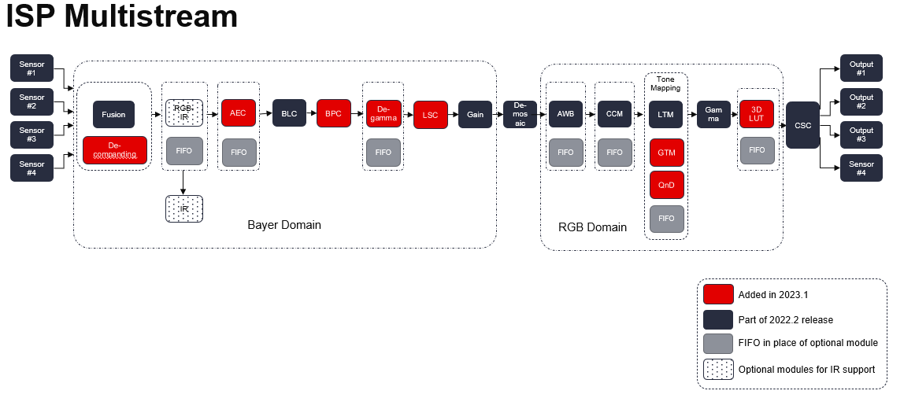

Design Examples Using the Vitis Vision Library¶
All hardware functions in the library have their own respective examples that are available in GitHub. This section provides details of image processing functions and pipelines implemented using a combination of various functions in Vitis vision. They illustrate how to best implement various functionalities using the capabilities of both the processor and the programmable logic (PL). These examples also illustrate different ways to implement complex dataflow paths. The following examples are described in this section:
- Iterative Pyramidal Dense Optical Flow
- Corner Tracking Using Optical Flow
- Color Detection
- Defect Detection
- Difference of Gaussian Filter
- Stereo Vision Pipeline
- Blob From Image
- Letterbox
- Image Sensor Processing pipeline
- Image Sensor Processing pipeline with HDR
- Image Sensor Processing pipeline with GTM
- Mono image Sensor Processing pipeline
- RGB-IR image Sensor Processing pipeline
- Image Sensor Processing multistream pipeline
- Image Sensor Processing all-in-one-adas pipeline
- Image Sensor Processing all-in-one pipeline
- 24 bits-per-channel Image Sensor Processing pipeline
Iterative Pyramidal Dense Optical Flow¶
The Dense Pyramidal Optical Flow example uses the xf::cv::pyrDown and
xf::cv::densePyrOpticalFlow hardware functions from the Vitis vision
library, to create an image pyramid, iterate over it and compute the
Optical Flow between two input images. The example uses xf::cv::pyrDown function to compute the image pyramids
of the two input images. The two image pyramids are
processed by xf::cv::densePyrOpticalFlow
function, starting from the smallest image size going up to the largest
image size. The output flow vectors of each iteration are fed back to
the hardware kernel as input to the hardware function. The output of the
last iteration on the largest image size is treated as the output of the
dense pyramidal optical flow example.

The Iterative Pyramidal Dense Optical Flow is computed in a nested for
loop which runs for iterations*pyramid levels number of iterations. The
main loop starts from the smallest image size and iterates up to the
largest image size. Before the loop iterates in one pyramid level, it
sets the current pyramid level’s height and width, in curr_height and
current_width variables. In the nested loop, the next_height variable is
set to the previous image height if scaling up is necessary, that is, in
the first iterations. As divisions are costly and one time divisions can
be avoided in hardware, the scale factor is computed in the host and
passed as an argument to the hardware kernel. After each pyramid level
in the first iteration, the scale-up flag is set to let the hardware
function know that the input flow vectors need to be scaled up to the
next higher image size. Scaling up is done using bilinear interpolation
in the hardware kernel.
After all the input data is prepared, and the flags are set, the host processor calls the hardware function. Please note that the host function swaps the flow vector inputs and outputs to the hardware function to iteratively solve the optimization problem.
Corner Tracking Using Optical Flow¶
This example illustrates how to detect and track the characteristic feature points in a set of successive frames of video. A Harris corner detector is used as the feature detector, and a modified version of the Lucas Kanade optical flow is used for tracking. The core part of the algorithm takes in current and next frame as the inputs and outputs the list of tracked corners. The current image is the first frame in the set, then corner detection is performed to detect the features to track. The number of frames in which the points need to be tracked is also provided as the input.
Corner tracking example uses five hardware functions from the Vitis vision
library xf::cv::cornerHarris, xf::cv:: cornersImgToList,
xf::cv::cornerUpdate, xf::cv::pyrDown, and xf::cv::densePyrOpticalFlow.

The function, xf::cv::cornerUpdate, has been added to ensure
that the dense flow vectors from the output of
thexf::cv::densePyrOpticalFlow function are sparsely picked and stored
in a new memory location as a sparse array. This was done to ensure that
the next function in the pipeline would not have to surf through the
memory by random accesses. The function takes corners from Harris corner
detector and dense optical flow vectors from the dense pyramidal optical
flow function and outputs the updated corner locations, tracking the
input corners using the dense flow vectors, thereby imitating the sparse
optical flow behavior. This hardware function runs at 300 MHz for 10,000
corners on a 720p image, adding very minimal latency to the pipeline.
cornerUpdate()¶
API Syntax
template <unsigned int MAXCORNERSNO, unsigned int TYPE, unsigned int ROWS, unsigned int COLS, unsigned int NPC, int XFCVDEPTH_IN = _XFCVDEPTH_DEFAULT>
void cornerUpdate(ap_uint<64> *list_fix, unsigned int *list, uint32_t nCorners, xf::cv::Mat<TYPE,ROWS,COLS,NPC, XFCVDEPTH_IN> &flow_vectors, ap_uint<1> harris_flag)
Parameter Descriptions
The following table describes the template and the function parameters.
| Parameter | Description |
|---|---|
| MAXCORNE RSNO | Maximum number of corners that the function needs to work on |
| TYPE | Input Pixel Type. Only 8-bit, unsigned, 1 channel is supported (XF_8UC1) |
| ROWS | Maximum height of input and output image (Must be multiple of 8) |
| COLS | Maximum width of input and output image (Must be multiple of 8) |
| NPC | Number of pixels to be processed per cycle. This function supports only XF_NPPC1 or 1-pixel per cycle operations. |
| XFCVDEPTH_IN | Depth of input image |
| list_fix | A list of packed fixed point coordinates of the corner locations in 16, 5 (16 integer bits and 5 fractional bits) format. Bits from 20 to 0 represent the column number, while the bits 41 to 21 represent the row number. The rest of the bits are used for flag, this flag is set when the tracked corner is valid. |
| list | A list of packed positive short integer coordinates of the corner locations in unsigned short format. Bits from 15 to 0 represent the column number, while the bits 31 to 16 represent the row number. This list is same as the list output by Harris Corner Detector. |
| nCorners | Number of corners to track |
| flow_vectors | Packed flow vectors as in xf::cv::DensePyrOpticalFlow function |
| harris_flag | If set to 1, the function takes input corners from list. if set to 0, the function takes input corners from list_fix. |
The example codeworks on an input video which is read and processed using the Vitis vision library.
cornersImgToList()¶
API Syntax
template <unsigned int MAXCORNERSNO, unsigned int TYPE, unsigned int ROWS, unsigned int COLS, unsigned int NPC, int XFCVDEPTH_IN = _XFCVDEPTH_DEFAULT>
void cornersImgToList(xf::cv::Mat<TYPE,ROWS,COLS,NPC, XFCVDEPTH_IN> &_src, unsigned int list[MAXCORNERSNO], unsigned int *ncorners)
Parameter Descriptions
The following table describes the function parameters.
| Parameter | Description |
|---|---|
| MAXCORNERSNO | Maximum number of corners that the function needs to work on |
| TYPE | Input Pixel Type. Only 8-bit, unsigned, 1 channel is supported (XF_8UC1) |
| ROWS | Maximum height of input and output image (Must be multiple of 8) |
| COLS | Maximum width of input and output image (Must be multiple of 8) |
| NPC | Number of pixels to be processed per cycle. This function supports only XF_NPPC1 or 1-pixel per cycle operations. |
| XFCVDEPTH_IN | Depth of input image |
| _src | The output image of harris corner detector. The size of this xf::cv::Mat object is the size of the input image to Harris corner detector. The value of each pixel is 255 if a corner is present in the location, 0 otherwise. |
| list | A 32-bit memory allocated, the size of MAXCORNERS, to store the corners detected by Harris Detector |
| ncorners | Total number of corners detected by Harris, that is, the number of corners in the list |
Image Processing¶
The following steps demonstrate the Image Processing procedure in the hardware pipeline:
xf::cv::cornerharrisis called to start processing the first input image.- The output of
xf::cv::cornerHarrisis fed toxf::cv::cornersImgToList. This function takes in an image with corners (marked as 255 and 0 elsewhere), and converts them to a list of corners. xf::cv::pyrDowncreates the two image pyramids and Dense Optical Flow is computed using the two image pyramids as described in the Iterative Pyramidal Dense Optical Flow example.xf::cv::densePyrOpticalFlowis called with the two image pyramids as inputs.xf::cv::cornerUpdatefunction is called to track the corner locations in the second image. Ifharris_flagis enabled, thecornerUpdatetracks corners from the output of the list, else it tracks the previously tracked corners.
The HarrisImg() function takes a flag called
harris_flag which is set during the first frame or when the corners need
to be re-detected. The xf::cv::cornerUpdate function outputs the updated
corners to the same memory location as the output corners list of
xf::cv::cornerImgToList. This means that when harris_flag is unset, the
corners input to the xf::cv::cornerUpdate are the corners tracked in the
previous cycle, that is, the corners in the first frame of the current
input frames.
After the Dense Optical Flow is computed, if harris_flag is set, the
number of corners that xf::cv::cornerharris has detected and
xf::cv::cornersImgToList has updated is copied to num_corners variable
. The other being the tracked corners list, listfixed. If
harris_flag is set, xf::cv::cornerUpdate tracks the corners in ‘list’
memory location, otherwise it tracks the corners in ‘listfixed’ memory
location.
Color Detection¶
The Color Detection algorithm is basically used for color object tracking and object detection, based on the color of the object. The color based methods are very useful for object detection and segmentation, when the object and the background have a significant difference in color.
The Color Detection example uses four hardware functions from the Vitis vision library. They are:
- xf::cv::BGR2HSV
- xf::cv::colorthresholding
- xf::cv::erode
- xf::cv::dilate
In the Color Detection example, the color space of the original BGR image is converted into an HSV color space. Because HSV color space is the most suitable color space for color based image segmentation. Later, based on the H (hue), S (saturation) and V (value) values, apply the thresholding operation on the HSV image and return either 255 or 0. After thresholding the image, apply erode (morphological opening) and dilate (morphological opening) functions to reduce unnecessary white patches (noise) in the image. Here, the example uses two hardware instances of erode and dilate functions. The erode followed by dilate and once again applying dilate followed by erode.

The following example demonstrates the Color Detection algorithm.
void color_detect(ap_uint<PTR_IN_WIDTH>* img_in,
unsigned char* low_thresh,
unsigned char* high_thresh,
unsigned char* process_shape,
ap_uint<PTR_OUT_WIDTH>* img_out,
int rows,
int cols) {
#pragma HLS INTERFACE m_axi port=img_in offset=slave bundle=gmem0
#pragma HLS INTERFACE m_axi port=low_thresh offset=slave bundle=gmem1
#pragma HLS INTERFACE s_axilite port=low_thresh
#pragma HLS INTERFACE m_axi port=high_thresh offset=slave bundle=gmem2
#pragma HLS INTERFACE s_axilite port=high_thresh
#pragma HLS INTERFACE s_axilite port=rows
#pragma HLS INTERFACE s_axilite port=cols
#pragma HLS INTERFACE m_axi port=process_shape offset=slave bundle=gmem3
#pragma HLS INTERFACE s_axilite port=process_shape
#pragma HLS INTERFACE m_axi port=img_out offset=slave bundle=gmem4
#pragma HLS INTERFACE s_axilite port=return
xf::cv::Mat<IN_TYPE, HEIGHT, WIDTH, NPC1, XF_CV_DEPTH_imgInput> imgInput(rows, cols);
xf::cv::Mat<IN_TYPE, HEIGHT, WIDTH, NPC1, XF_CV_DEPTH_rgb2hsv> rgb2hsv(rows, cols);
xf::cv::Mat<OUT_TYPE, HEIGHT, WIDTH, NPC1, XF_CV_DEPTH_imgHelper1> imgHelper1(rows, cols);
xf::cv::Mat<OUT_TYPE, HEIGHT, WIDTH, NPC1, XF_CV_DEPTH_imgHelper2> imgHelper2(rows, cols);
xf::cv::Mat<OUT_TYPE, HEIGHT, WIDTH, NPC1, XF_CV_DEPTH_imgHelper3> imgHelper3(rows, cols);
xf::cv::Mat<OUT_TYPE, HEIGHT, WIDTH, NPC1, XF_CV_DEPTH_imgHelper4> imgHelper4(rows, cols);
xf::cv::Mat<OUT_TYPE, HEIGHT, WIDTH, NPC1, XF_CV_DEPTH_imgOutput> imgOutput(rows, cols);
// Copy the shape data:
unsigned char _kernel[FILTER_SIZE * FILTER_SIZE];
for (unsigned int i = 0; i < FILTER_SIZE * FILTER_SIZE; ++i) {
#pragma HLS PIPELINE
// clang-format on
_kernel[i] = process_shape[i];
}
#pragma HLS DATAFLOW
// clang-format on
// Retrieve xf::cv::Mat objects from img_in data:
xf::cv::Array2xfMat<PTR_IN_WIDTH, IN_TYPE, HEIGHT, WIDTH, NPC1, XF_CV_DEPTH_imgInput>(img_in, imgInput);
// Convert RGBA to HSV:
xf::cv::bgr2hsv<IN_TYPE, HEIGHT, WIDTH, NPC1, XF_CV_DEPTH_imgInput, XF_CV_DEPTH_rgb2hsv>(imgInput, rgb2hsv);
// Do the color thresholding:
xf::cv::colorthresholding<IN_TYPE, OUT_TYPE, MAXCOLORS, HEIGHT, WIDTH, NPC1, XF_CV_DEPTH_rgb2hsv, XF_CV_DEPTH_imgHelper1>(rgb2hsv, imgHelper1, low_thresh,
high_thresh);
// Use erode and dilate to fully mark color areas:
xf::cv::erode<XF_BORDER_CONSTANT, OUT_TYPE, HEIGHT, WIDTH, XF_KERNEL_SHAPE, FILTER_SIZE, FILTER_SIZE, ITERATIONS,
NPC1, XF_CV_DEPTH_imgHelper1, XF_CV_DEPTH_imgHelper2>(imgHelper1, imgHelper2, _kernel);
xf::cv::dilate<XF_BORDER_CONSTANT, OUT_TYPE, HEIGHT, WIDTH, XF_KERNEL_SHAPE, FILTER_SIZE, FILTER_SIZE, ITERATIONS,
NPC1, XF_CV_DEPTH_imgHelper2, XF_CV_DEPTH_imgHelper3>(imgHelper2, imgHelper3, _kernel);
xf::cv::dilate<XF_BORDER_CONSTANT, OUT_TYPE, HEIGHT, WIDTH, XF_KERNEL_SHAPE, FILTER_SIZE, FILTER_SIZE, ITERATIONS,
NPC1, XF_CV_DEPTH_imgHelper3, XF_CV_DEPTH_imgHelper4>(imgHelper3, imgHelper4, _kernel);
xf::cv::erode<XF_BORDER_CONSTANT, OUT_TYPE, HEIGHT, WIDTH, XF_KERNEL_SHAPE, FILTER_SIZE, FILTER_SIZE, ITERATIONS,
NPC1, XF_CV_DEPTH_imgHelper4, XF_CV_DEPTH_imgOutput>(imgHelper4, imgOutput, _kernel);
// Convert _dst xf::cv::Mat object to output array:
xf::cv::xfMat2Array<PTR_OUT_WIDTH, OUT_TYPE, HEIGHT, WIDTH, NPC1, XF_CV_DEPTH_imgOutput>(imgOutput, img_out);
return;
} // End of kernel
In the given example, the source image is passed to the xf::cv::BGR2HSV
function, the output of that function is passed to the
xf::cv::colorthresholding module, the thresholded image is passed to the
xf::cv::erode function and, the xf::cv::dilate functions and the final
output image are returned.
Defect Detection Pipeline¶
The Defect Detection accelerated application is a machine vision application that automates detection of defects in mangoes and sorting in high-speed factory pipelines by using computer vision library functions. The Defect detection application detects defects in a mango.
The Application has following pipelines:
- Gaussian Otsu pipeline, which includes functions xf::cv::custom-bgr2y8,
xf::cv::GaussianBlur, xf::cv::OtsuThreshold.
- Preprocess pipeline, which includes functions xf::cv::Threshold,
xf::cv::fw_cca. - CCA custom pipeline, which includes functions
xf::cv::rev_cca,xf::cv::pass_2.
In the Gaussian Otsu pipeline, the BGR input image is converted to custom y8 format and the output is processed through GaussianBlur and OtsuThreshold which computes threshold value to mark the defects.
The Preprocess pipeline, which contains the xf::cv::Threshold function and xf::cv::fw_cca is moved to the preprocess pipeline to improve performance
where it processes the image in forward direction to get information on edge between mango pixels and background pixels.
The CCA custom pipeline, which includes xf::cv::rev_cca, which processes the image in a backwards direction and xf::cv::pass_2 which adds
both forward and backward passes and gives the number of defect pixels.


pass_2()¶
API Syntax
template <int SRC_T, int HEIGHT, int WIDTH, int NPC, int XFCVDEPTH_OUT>
void pass_2(uint8_t* fwd_in_ptr,
xf::cv::Mat<SRC_T, HEIGHT, WIDTH, NPC, XFCVDEPTH_OUT>& tmp_out_mat,
uint8_t* out_ptr,
int& def_pix,
int height,
int width)
Parameter Descriptions
The following table describes the template and the function parameters.
| Parameter | Description |
|---|---|
| SRC_T | Input Pixel type. The current supported pixel value is XF_8UC1 |
| HEIGHT | Maximum height of the image that hardware kernel must be built for |
| WIDTH | Maximum width of the image that hardware kernel must be built for |
| NPC | Number of Pixels to be processed per cycle. NPPC1 is supported. |
| XFCVDEPTH_OUT | Depth of Mat Image |
| fwd_in_ptr | Output Image pointer of fw_cca |
| tmp_out_mat | Output Image of rev_cca |
| out_ptr | Output Image pointer of pass_2 |
| def_pix | number of defect pixels |
| height | height of Image pointer |
| width | width of Image pointer |
Resource Utilization
The following table summarizes the resource utilization in different configurations, generated using Vitis HLS 2022.2 tool for the xcu200-fsgd2104-2-e, to process a FHD image.
| Pipelines | Utilization Estimate | ||||
|---|---|---|---|---|---|
| BRAM_18K | DSP | FF | LUT | URAM | |
| Gaussian_Otsu | 12 | 71 | 11703 | 13633 | 0 |
| Preprocess | 7 | 9 | 4123 | 5244 | 0 |
| Custom CCA | 10 | 10 | 12642 | 13756 | 0 |
Performance Estimate
The following table summarizes the performance estimates in different configurations, generated using Vitis HLS 2022.2 tool for the xcu200-fsgd2104-2-e, to process a FHD image.
| Pipelines | Operating Frequency (MHz) |
Latency Estimate |
|---|---|---|
| Max (ms) | ||
| Gaussian_Otsu | 300 | 7.1 |
| Preprocess | 300 | 14.4 |
| Custom CCA | 300 | 7 |
Difference of Gaussian Filter¶
The Difference of Gaussian Filter example uses four hardware functions from the Vitis vision library. They are:
- xf::cv::GaussianBlur
- xf::cv::duplicateMat
- xf::cv::subtract
The Difference of Gaussian Filter function can be implemented by applying Gaussian Filter on the original source image, and that Gaussian blurred image is duplicated as two images. The Gaussian blur function is applied to one of the duplicated images, whereas the other one is stored as it is. Later, perform the Subtraction function on, two times Gaussian applied image and one of the duplicated image.

The following example demonstrates the Difference of Gaussian Filter example.
void gaussiandiference(ap_uint<PTR_WIDTH>* img_in, float sigma, ap_uint<PTR_WIDTH>* img_out, int rows, int cols) {
#pragma HLS INTERFACE m_axi port=img_in offset=slave bundle=gmem0
#pragma HLS INTERFACE m_axi port=img_out offset=slave bundle=gmem1
#pragma HLS INTERFACE s_axilite port=sigma
#pragma HLS INTERFACE s_axilite port=rows
#pragma HLS INTERFACE s_axilite port=cols
#pragma HLS INTERFACE s_axilite port=return
xf::cv::Mat<TYPE, HEIGHT, WIDTH, NPC1> imgInput(rows, cols);
xf::cv::Mat<TYPE, HEIGHT, WIDTH, NPC1> imgin1(rows, cols);
xf::cv::Mat<TYPE, HEIGHT, WIDTH, NPC1> imgin2(rows, cols);
xf::cv::Mat<TYPE, HEIGHT, WIDTH, NPC1, 15360> imgin3(rows, cols);
xf::cv::Mat<TYPE, HEIGHT, WIDTH, NPC1> imgin4(rows, cols);
xf::cv::Mat<TYPE, HEIGHT, WIDTH, NPC1> imgOutput(rows, cols);
#pragma HLS DATAFLOW
// Retrieve xf::cv::Mat objects from img_in data:
xf::cv::Array2xfMat<PTR_WIDTH, TYPE, HEIGHT, WIDTH, NPC1>(img_in, imgInput);
// Run xfOpenCV kernel:
xf::cv::GaussianBlur<FILTER_WIDTH, XF_BORDER_CONSTANT, TYPE, HEIGHT, WIDTH, NPC1>(imgInput, imgin1, sigma);
xf::cv::duplicateMat<TYPE, HEIGHT, WIDTH, NPC1, 15360>(imgin1, imgin2, imgin3);
xf::cv::GaussianBlur<FILTER_WIDTH, XF_BORDER_CONSTANT, TYPE, HEIGHT, WIDTH, NPC1>(imgin2, imgin4, sigma);
xf::cv::subtract<XF_CONVERT_POLICY_SATURATE, TYPE, HEIGHT, WIDTH, NPC1, 15360>(imgin3, imgin4, imgOutput);
// Convert output xf::cv::Mat object to output array:
xf::cv::xfMat2Array<PTR_WIDTH, TYPE, HEIGHT, WIDTH, NPC1>(imgOutput, img_out);
return;
} // End of kernel
In the given example, the Gaussain Blur function is applied for source image imginput, and resultant image imgin1 is passed to xf::cv::duplicateMat. The imgin2 and imgin3 are the duplicate images of Gaussian applied image. Again gaussian blur is applied to imgin2 and the result is stored in imgin4. Now, perform the subtraction between imgin4 and imgin3, but here imgin3 has to wait up to at least one pixel of imgin4 generation. Finally the subtraction performed on imgin3 and imgin4.
Stereo Vision Pipeline¶
Disparity map generation is one of the first steps in creating a three dimensional map of the environment. The Vitis vision library has components to build an image processing pipeline to compute a disparity map given the camera parameters and inputs from a stereo camera setup.
The two main components involved in the pipeline are stereo
rectification and disparity estimation using local block matching
method. While disparity estimation using local block matching is a
discrete component in Vitis vision, rectification block can be constructed
using xf::cv::InitUndistortRectifyMapInverse() and xf::cv::Remap(). The
dataflow pipeline is shown below. The camera parameters are an
additional input to the pipeline.

The following code is for the pipeline.
void stereopipeline_accel(ap_uint<INPUT_PTR_WIDTH>* img_L,
ap_uint<INPUT_PTR_WIDTH>* img_R,
ap_uint<OUTPUT_PTR_WIDTH>* img_disp,
float* cameraMA_l,
float* cameraMA_r,
float* distC_l,
float* distC_r,
float* irA_l,
float* irA_r,
int* bm_state_arr,
int rows,
int cols) {
#pragma HLS INTERFACE m_axi port=img_L offset=slave bundle=gmem1
#pragma HLS INTERFACE m_axi port=img_R offset=slave bundle=gmem5
#pragma HLS INTERFACE m_axi port=img_disp offset=slave bundle=gmem6
#pragma HLS INTERFACE m_axi port=cameraMA_l offset=slave bundle=gmem2
#pragma HLS INTERFACE m_axi port=cameraMA_r offset=slave bundle=gmem2
#pragma HLS INTERFACE m_axi port=distC_l offset=slave bundle=gmem3
#pragma HLS INTERFACE m_axi port=distC_r offset=slave bundle=gmem3
#pragma HLS INTERFACE m_axi port=irA_l offset=slave bundle=gmem2
#pragma HLS INTERFACE m_axi port=irA_r offset=slave bundle=gmem2
#pragma HLS INTERFACE m_axi port=bm_state_arr offset=slave bundle=gmem4
#pragma HLS INTERFACE s_axilite port=rows
#pragma HLS INTERFACE s_axilite port=cols
#pragma HLS INTERFACE s_axilite port=return
ap_fixed<32, 12> cameraMA_l_fix[XF_CAMERA_MATRIX_SIZE], cameraMA_r_fix[XF_CAMERA_MATRIX_SIZE],
distC_l_fix[XF_DIST_COEFF_SIZE], distC_r_fix[XF_DIST_COEFF_SIZE], irA_l_fix[XF_CAMERA_MATRIX_SIZE],
irA_r_fix[XF_CAMERA_MATRIX_SIZE];
for (int i = 0; i < XF_CAMERA_MATRIX_SIZE; i++) {
#pragma HLS PIPELINE II=1
// clang-format on
cameraMA_l_fix[i] = (ap_fixed<32, 12>)cameraMA_l[i];
cameraMA_r_fix[i] = (ap_fixed<32, 12>)cameraMA_r[i];
irA_l_fix[i] = (ap_fixed<32, 12>)irA_l[i];
irA_r_fix[i] = (ap_fixed<32, 12>)irA_r[i];
}
for (int i = 0; i < XF_DIST_COEFF_SIZE; i++) {
#pragma HLS PIPELINE II=1
// clang-format on
distC_l_fix[i] = (ap_fixed<32, 12>)distC_l[i];
distC_r_fix[i] = (ap_fixed<32, 12>)distC_r[i];
}
xf::cv::xFSBMState<SAD_WINDOW_SIZE, NO_OF_DISPARITIES, PARALLEL_UNITS> bm_state;
bm_state.preFilterType = bm_state_arr[0];
bm_state.preFilterSize = bm_state_arr[1];
bm_state.preFilterCap = bm_state_arr[2];
bm_state.SADWindowSize = bm_state_arr[3];
bm_state.minDisparity = bm_state_arr[4];
bm_state.numberOfDisparities = bm_state_arr[5];
bm_state.textureThreshold = bm_state_arr[6];
bm_state.uniquenessRatio = bm_state_arr[7];
bm_state.ndisp_unit = bm_state_arr[8];
bm_state.sweepFactor = bm_state_arr[9];
bm_state.remainder = bm_state_arr[10];
int _cm_size = 9, _dc_size = 5;
xf::cv::Mat<XF_8UC1, XF_HEIGHT, XF_WIDTH, XF_NPPC1, XF_CV_DEPTH_MAT_L> mat_L(rows, cols);
xf::cv::Mat<XF_8UC1, XF_HEIGHT, XF_WIDTH, XF_NPPC1, XF_CV_DEPTH_MAT_R> mat_R(rows, cols);
xf::cv::Mat<XF_16UC1, XF_HEIGHT, XF_WIDTH, XF_NPPC1, XF_CV_DEPTH_MAT_DISP> mat_disp(rows, cols);
xf::cv::Mat<XF_32FC1, XF_HEIGHT, XF_WIDTH, XF_NPPC1, XF_CV_DEPTH_MAP_XL> mapxLMat(rows, cols);
xf::cv::Mat<XF_32FC1, XF_HEIGHT, XF_WIDTH, XF_NPPC1, XF_CV_DEPTH_MAP_YL> mapyLMat(rows, cols);
xf::cv::Mat<XF_32FC1, XF_HEIGHT, XF_WIDTH, XF_NPPC1, XF_CV_DEPTH_MAP_XR> mapxRMat(rows, cols);
xf::cv::Mat<XF_32FC1, XF_HEIGHT, XF_WIDTH, XF_NPPC1, XF_CV_DEPTH_MAP_YR> mapyRMat(rows, cols);
xf::cv::Mat<XF_8UC1, XF_HEIGHT, XF_WIDTH, XF_NPPC1, XF_CV_DEPTH_LEFT_REMAPPED> leftRemappedMat(rows, cols);
xf::cv::Mat<XF_8UC1, XF_HEIGHT, XF_WIDTH, XF_NPPC1, XF_CV_DEPTH_RIGHT_REMAPPED> rightRemappedMat(rows, cols);
#pragma HLS DATAFLOW
xf::cv::Array2xfMat<INPUT_PTR_WIDTH, XF_8UC1, XF_HEIGHT, XF_WIDTH, XF_NPPC1, XF_CV_DEPTH_MAT_L>(img_L, mat_L);
xf::cv::Array2xfMat<INPUT_PTR_WIDTH, XF_8UC1, XF_HEIGHT, XF_WIDTH, XF_NPPC1, XF_CV_DEPTH_MAT_R>(img_R, mat_R);
xf::cv::InitUndistortRectifyMapInverse<XF_CAMERA_MATRIX_SIZE, XF_DIST_COEFF_SIZE, XF_32FC1, XF_HEIGHT, XF_WIDTH,
XF_NPPC1, XF_CV_DEPTH_MAP_XL, XF_CV_DEPTH_MAP_YL>(cameraMA_l_fix, distC_l_fix, irA_l_fix, mapxLMat, mapyLMat,
_cm_size, _dc_size);
xf::cv::remap<XF_REMAP_BUFSIZE, XF_INTERPOLATION_BILINEAR, XF_8UC1, XF_32FC1, XF_8UC1, XF_HEIGHT, XF_WIDTH,
XF_NPPC1, XF_USE_URAM, XF_CV_DEPTH_MAT_L, XF_CV_DEPTH_LEFT_REMAPPED, XF_CV_DEPTH_MAP_XL, XF_CV_DEPTH_MAP_YL>(mat_L, leftRemappedMat, mapxLMat, mapyLMat);
xf::cv::InitUndistortRectifyMapInverse<XF_CAMERA_MATRIX_SIZE, XF_DIST_COEFF_SIZE, XF_32FC1, XF_HEIGHT, XF_WIDTH,
XF_NPPC1, XF_CV_DEPTH_MAP_XR, XF_CV_DEPTH_MAP_YR>(cameraMA_r_fix, distC_r_fix, irA_r_fix, mapxRMat, mapyRMat,
_cm_size, _dc_size);
xf::cv::remap<XF_REMAP_BUFSIZE, XF_INTERPOLATION_BILINEAR, XF_8UC1, XF_32FC1, XF_8UC1, XF_HEIGHT, XF_WIDTH,
XF_NPPC1, XF_USE_URAM, XF_CV_DEPTH_MAT_R, XF_CV_DEPTH_RIGHT_REMAPPED, XF_CV_DEPTH_MAP_XR, XF_CV_DEPTH_MAP_YR>(mat_R, rightRemappedMat, mapxRMat, mapyRMat);
xf::cv::StereoBM<SAD_WINDOW_SIZE, NO_OF_DISPARITIES, PARALLEL_UNITS, XF_8UC1, XF_16UC1, XF_HEIGHT, XF_WIDTH,
XF_NPPC1, XF_USE_URAM, XF_CV_DEPTH_LEFT_REMAPPED, XF_CV_DEPTH_RIGHT_REMAPPED, XF_CV_DEPTH_MAT_DISP>(leftRemappedMat, rightRemappedMat, mat_disp, bm_state);
xf::cv::xfMat2Array<OUTPUT_PTR_WIDTH, XF_16UC1, XF_HEIGHT, XF_WIDTH, XF_NPPC1, XF_CV_DEPTH_MAT_DISP>(mat_disp, img_disp);
}
Blob From Image¶
This example shows how various xfOpenCV funtions can be used to accelerate preprocessing of input images before feeding them to a Deep Neural Network (DNN) accelerator.
This specific application shows how pre-processing for Googlenet_v1 can be accelerated which involves resizing the input image to 224 x 224 size followed by mean subtraction. The two main
functions from Vitis vision library which are used to build this pipeline are xf::cv::resize() and xf::cv::preProcess() which operate in dataflow.

The following code shows the top level wrapper containing the xf::cv::resize() and xf::cv::preProcess() calls.
void pp_pipeline_accel(ap_uint<INPUT_PTR_WIDTH> *img_inp, ap_uint<OUTPUT_PTR_WIDTH> *img_out, int rows_in, int cols_in, int rows_out, int cols_out, float params[3*T_CHANNELS], int th1, int th2)
{
//HLS Interface pragmas
#pragma HLS INTERFACE m_axi port=img_inp offset=slave bundle=gmem1
#pragma HLS INTERFACE m_axi port=img_out offset=slave bundle=gmem2
#pragma HLS INTERFACE m_axi port=params offset=slave bundle=gmem3
#pragma HLS INTERFACE s_axilite port=rows_in bundle=control
#pragma HLS INTERFACE s_axilite port=cols_in bundle=control
#pragma HLS INTERFACE s_axilite port=rows_out bundle=control
#pragma HLS INTERFACE s_axilite port=cols_out bundle=control
#pragma HLS INTERFACE s_axilite port=th1 bundle=control
#pragma HLS INTERFACE s_axilite port=th2 bundle=control
#pragma HLS INTERFACE s_axilite port=return bundle=control
xf::cv::Mat<XF_8UC3, HEIGHT, WIDTH, NPC1> imgInput0(rows_in, cols_in);
xf::cv::Mat<TYPE, NEWHEIGHT, NEWWIDTH, NPC_T> out_mat(rows_out, cols_out);
hls::stream<ap_uint<256> > resizeStrmout;
int srcMat_cols_align_npc = ((out_mat.cols + (NPC_T - 1)) >> XF_BITSHIFT(NPC_T)) << XF_BITSHIFT(NPC_T);
#pragma HLS DATAFLOW
xf::cv::Array2xfMat<INPUT_PTR_WIDTH,XF_8UC3,HEIGHT, WIDTH, NPC1> (img_inp, imgInput0);
xf::cv::resize<INTERPOLATION,TYPE,HEIGHT,WIDTH,NEWHEIGHT,NEWWIDTH,NPC_T,XF_USE_URAM,MAXDOWNSCALE> (imgInput0, out_mat);
xf::cv::accel_utils obj;
obj.xfMat2hlsStrm<INPUT_PTR_WIDTH, TYPE, NEWHEIGHT, NEWWIDTH, NPC_T, (NEWWIDTH*NEWHEIGHT/8)>(out_mat, resizeStrmout, srcMat_cols_align_npc);
xf::cv::preProcess <INPUT_PTR_WIDTH, OUTPUT_PTR_WIDTH, T_CHANNELS, CPW, HEIGHT, WIDTH, NPC_TEST, PACK_MODE, X_WIDTH, ALPHA_WIDTH, BETA_WIDTH, GAMMA_WIDTH, OUT_WIDTH, X_IBITS, ALPHA_IBITS, BETA_IBITS, GAMMA_IBITS, OUT_IBITS, SIGNED_IN, OPMODE> (resizeStrmout, img_out, params, rows_out, cols_out, th1, th2);
}
This piepeline is integrated with Deep learning Processign Unit (DPU) as part of Vitis-AI-Library and achieved 11 % speed up compared to software pre-procesing.
- Overall Performance (Images/sec):
- with software pre-processing : 125 images/sec
- with hardware accelerated pre-processing : 140 images/sec
Letterbox¶
The Letterbox algorithm is used for scaling input image to desired output size while preserving aspect ratio of original image. If required, zeroes are padded for preserving the aspect ratio post resize.
An application of letterbox is in the pre-processing block of machine learning pipelines used in image processing.

The following example demonstrates the Letterbox algorithm.
void letterbox_accel(ap_uint<INPUT_PTR_WIDTH>* img_inp,
ap_uint<OUTPUT_PTR_WIDTH>* img_out,
int rows_in,
int cols_in,
int rows_out,
int cols_out,
int insert_pad_value) {
#pragma HLS INTERFACE m_axi port=img_inp offset=slave bundle=gmem1
#pragma HLS INTERFACE m_axi port=img_out offset=slave bundle=gmem2
#pragma HLS INTERFACE s_axilite port=rows_in
#pragma HLS INTERFACE s_axilite port=cols_in
#pragma HLS INTERFACE s_axilite port=rows_out
#pragma HLS INTERFACE s_axilite port=cols_out
#pragma HLS INTERFACE s_axilite port=insert_pad_value
#pragma HLS INTERFACE s_axilite port=return
// Compute Resize output image size for Letterbox
float scale_height = (float)rows_out/(float)rows_in;
float scale_width = (float)cols_out/(float)cols_in;
int rows_out_resize, cols_out_resize;
if(scale_width<scale_height){
cols_out_resize = cols_out;
rows_out_resize = (int)((float)(rows_in*cols_out)/(float)cols_in);
}
else{
cols_out_resize = (int)((float)(cols_in*rows_out)/(float)rows_in);
rows_out_resize = rows_out;
}
xf::cv::Mat<TYPE, HEIGHT, WIDTH, NPC_T, XF_CV_DEPTH_IN_0> imgInput0(rows_in, cols_in);
xf::cv::Mat<TYPE, NEWHEIGHT, NEWWIDTH, NPC_T, XF_CV_DEPTH_OUT_1> out_mat_resize(rows_out_resize, cols_out_resize);
xf::cv::Mat<TYPE, NEWHEIGHT, NEWWIDTH, NPC_T, XF_CV_DEPTH_OUT_2> out_mat(rows_out, cols_out);
#pragma HLS DATAFLOW
xf::cv::Array2xfMat<INPUT_PTR_WIDTH,XF_8UC3,HEIGHT, WIDTH, NPC_T, XF_CV_DEPTH_IN_0> (img_inp, imgInput0);
xf::cv::resize<INTERPOLATION,TYPE,HEIGHT,WIDTH,NEWHEIGHT,NEWWIDTH,NPC_T, XF_USE_URAM, XF_CV_DEPTH_IN_0, XF_CV_DEPTH_OUT_1,MAXDOWNSCALE> (imgInput0, out_mat_resize);
xf::cv::insertBorder<TYPE, NEWHEIGHT, NEWWIDTH, NEWHEIGHT, NEWWIDTH, NPC_T, XF_CV_DEPTH_OUT_1, XF_CV_DEPTH_OUT_2>(out_mat_resize, out_mat, insert_pad_value);
xf::cv::xfMat2Array<OUTPUT_PTR_WIDTH, TYPE, NEWHEIGHT, NEWWIDTH, NPC_T, XF_CV_DEPTH_OUT_2>(out_mat, img_out);
return;
}// end kernel
The Letterbox example uses two hardware functions from the Vitis vision library. They are:
- xf::cv::resize
- xf::cv::insertBorder
In the given example, the source image is passed to the xf::cv::resize function. The output of that function is passed to the xf::cv::insertBorder module and the final output image are returned.
Insert Border API Syntax
template <
int TYPE,
int SRC_ROWS,
int SRC_COLS,
int DST_ROWS,
int DST_COLS,
int NPC,
int XFCVDEPTH_IN = _XFCVDEPTH_DEFAULT,
int XFCVDEPTH_OUT = _XFCVDEPTH_DEFAULT
>
void insertBorder (
xf::cv::Mat <TYPE, SRC_ROWS, SRC_COLS, NPC, XFCVDEPTH_IN>& _src,
xf::cv::Mat <TYPE, DST_ROWS, DST_COLS, NPC, XFCVDEPTH_OUT>& _dst,
int insert_pad_val
)
:start-after: "dnn/xf_insertBorder.hpp"
Image Sensor Processing pipeline¶
Image Sensor Processing (ISP) is a pipeline of image processing functions processing the raw image from the sensor.
This ISP includes following blocks:
- Black level correction: Black level leads to the whitening of image in dark region and perceived loss of overall contrast. The Blacklevelcorrection algorithm corrects the black and white levels of the overall image.
- BPC (Bad pixel correction): An image sensor may have a certain number of defective/bad pixels that may be the result of manufacturing faults or variations in pixel voltage levels based on temperature or exposure. Bad pixel correction module removes defective pixels.
- Gain Control: The Gain control module improves the overall brightness of the image.
- Demosaicing: The demosaic module reconstructs RGB pixels from the input Bayer image (RGGB,BGGR,RGBG,GRGB).
- Auto white balance: The AWB module improves color balance of the image by using image statistics.
- Colorcorrection matrix: corrects color suitable for display or video system.
- Quantization and Dithering: Quantization and Dithering performs the uniform quantization to also reduce higher bit depth to lower bit depths.
- Gamma correction: Gamma correction improves the overall brightness of image.
- Color space conversion: Converting RGB image to YUV422(YUYV) image for HDMI display purpose. RGB2YUYV converts the RGB image into Y channel for every pixel and U and V for alternate pixels.

Current design example demonstrates how to use ISP functions in a pipeline.
User can dynamically configure the below parameters to the pipeline.
| Parameter | Description |
|---|---|
| rgain | To configure gain value for the red channel. |
| bgain | To configure gain value for the blue channel. |
| gamma_lut | Lookup table for gamma values.first 256 will be R, next 256 values are G gamma and last 256 values are B values |
| mode_reg | Flag to enable/disable AWB algorithm |
| pawb | %top and %bottom pixels are ignored while computing min and max to improve quality. |
| rows | The number of rows in the image or height of the image. |
| cols | The number of columns in the image or width of the image. |
User can also use below compile time parameters to the pipeline.
| Parameter | Description |
|---|---|
| XF_HEIGHT | Maximum height of input and output image |
| XF_WIDTH | Maximum width of input and output image (Must be a multiple of NPC) |
| XF_BAYER_PATTERN | The Bayer format of the RAW input image. supported formats are RGGB,BGGR,GBRG,GRBG. |
| XF_SRC_T | Input pixel type,Supported pixel widths are 8,10,12,16 |
The following example demonstrates the ISP pipeline with above list of functions.
void ISPPipeline_accel(ap_uint<INPUT_PTR_WIDTH>* img_inp,
ap_uint<OUTPUT_PTR_WIDTH>* img_out,
int height,
int width,
uint16_t rgain,
uint16_t bgain,
unsigned char gamma_lut[256 * 3],
unsigned char mode_reg,
uint16_t pawb) {
#pragma HLS INTERFACE m_axi port=img_inp offset=slave bundle=gmem1
#pragma HLS INTERFACE m_axi port=img_out offset=slave bundle=gmem2
#pragma HLS ARRAY_PARTITION variable=hist0_awb complete dim=1
#pragma HLS ARRAY_PARTITION variable=hist1_awb complete dim=1
if (!flag) {
ISPpipeline(img_inp, img_out, height, width, hist0_awb, hist1_awb, igain_0, igain_1, rgain, bgain, gamma_lut,
mode_reg, pawb);
flag = 1;
} else {
ISPpipeline(img_inp, img_out, height, width, hist1_awb, hist0_awb, igain_1, igain_0, rgain, bgain, gamma_lut,
mode_reg, pawb);
flag = 0;
}
}
void ISPpipeline(ap_uint<INPUT_PTR_WIDTH>* img_inp,
ap_uint<OUTPUT_PTR_WIDTH>* img_out,
unsigned short height,
unsigned short width,
uint32_t hist0[3][HIST_SIZE],
uint32_t hist1[3][HIST_SIZE],
int gain0[3],
int gain1[3],
uint16_t rgain,
uint16_t bgain,
unsigned char gamma_lut[256 * 3],
unsigned char mode_reg,
uint16_t pawb) {
#pragma HLS INLINE OFF
xf::cv::Mat<XF_SRC_T, XF_HEIGHT, XF_WIDTH, XF_NPPC, XF_CV_DEPTH_IN_0> imgInput1(height, width);
xf::cv::Mat<XF_SRC_T, XF_HEIGHT, XF_WIDTH, XF_NPPC, XF_CV_DEPTH_IN_1> imgInput2(height, width);
xf::cv::Mat<XF_SRC_T, XF_HEIGHT, XF_WIDTH, XF_NPPC, XF_CV_DEPTH_IN_2> bpc_out(height, width);
xf::cv::Mat<XF_SRC_T, XF_HEIGHT, XF_WIDTH, XF_NPPC, XF_CV_DEPTH_IN_3> gain_out(height, width);
xf::cv::Mat<XF_DST_T, XF_HEIGHT, XF_WIDTH, XF_NPPC, XF_CV_DEPTH_OUT_0> demosaic_out(height, width);
xf::cv::Mat<XF_DST_T, XF_HEIGHT, XF_WIDTH, XF_NPPC, XF_CV_DEPTH_OUT_1> impop(height, width);
xf::cv::Mat<XF_DST_T, XF_HEIGHT, XF_WIDTH, XF_NPPC, XF_CV_DEPTH_OUT_2> ltm_in(height, width);
xf::cv::Mat<XF_DST_T, XF_HEIGHT, XF_WIDTH, XF_NPPC, XF_CV_DEPTH_OUT_3> lsc_out(height, width);
xf::cv::Mat<XF_LTM_T, XF_HEIGHT, XF_WIDTH, XF_NPPC, XF_CV_DEPTH_OUT_4> _dst(height, width);
xf::cv::Mat<XF_LTM_T, XF_HEIGHT, XF_WIDTH, XF_NPPC, XF_CV_DEPTH_OUT_5> aecin(height, width);
xf::cv::Mat<XF_16UC1, XF_HEIGHT, XF_WIDTH, XF_NPPC, XF_CV_DEPTH_OUT_6> _imgOutput(height, width);
#pragma HLS DATAFLOW
const int Q_VAL = 1 << (XF_DTPIXELDEPTH(XF_SRC_T, XF_NPPC));
float thresh = (float)pawb / 256;
float inputMax = (1 << (XF_DTPIXELDEPTH(XF_SRC_T, XF_NPPC))) - 1; // 65535.0f;
float mul_fact = (inputMax / (inputMax - BLACK_LEVEL));
unsigned int blc_config_1 = (int)(mul_fact * 65536); // mul_fact int Q16_16 format
unsigned int blc_config_2 = BLACK_LEVEL;
xf::cv::Array2xfMat<INPUT_PTR_WIDTH, XF_SRC_T, XF_HEIGHT, XF_WIDTH, XF_NPPC, XF_CV_DEPTH_IN_0>(img_inp, imgInput1);
xf::cv::blackLevelCorrection<XF_SRC_T, XF_HEIGHT, XF_WIDTH, XF_NPPC, 16, 15, 1, XF_CV_DEPTH_IN_0, XF_CV_DEPTH_IN_1>(imgInput1, imgInput2, blc_config_2,blc_config_1);
xf::cv::gaincontrol<XF_BAYER_PATTERN, XF_SRC_T, XF_HEIGHT, XF_WIDTH, XF_NPPC, XF_CV_DEPTH_IN_1, XF_CV_DEPTH_IN_3>(imgInput2, gain_out, rgain, bgain);
xf::cv::demosaicing<XF_BAYER_PATTERN, XF_SRC_T, XF_DST_T, XF_HEIGHT, XF_WIDTH, XF_NPPC, 0, XF_CV_DEPTH_IN_3, XF_CV_DEPTH_OUT_0>(gain_out, demosaic_out);
function_awb<XF_DST_T, XF_DST_T, XF_HEIGHT, XF_WIDTH, XF_NPPC, XF_CV_DEPTH_OUT_0, XF_CV_DEPTH_OUT_2>(demosaic_out, ltm_in, hist0, hist1, gain0, gain1,height, width, mode_reg, thresh);
xf::cv::colorcorrectionmatrix<XF_CCM_TYPE, XF_DST_T, XF_DST_T, XF_HEIGHT, XF_WIDTH, XF_NPPC, XF_CV_DEPTH_OUT_2, XF_CV_DEPTH_OUT_3>(ltm_in, lsc_out);
if (XF_DST_T == XF_8UC3) {
fifo_copy<XF_DST_T, XF_LTM_T, XF_HEIGHT, XF_WIDTH, XF_NPPC, XF_CV_DEPTH_OUT_3, XF_CV_DEPTH_OUT_5>(lsc_out, aecin, height, width);
} else {
xf::cv::xf_QuatizationDithering<XF_DST_T, XF_LTM_T, XF_HEIGHT, XF_WIDTH, 256, Q_VAL, XF_NPPC, XF_CV_DEPTH_OUT_3, XF_CV_DEPTH_OUT_5>(lsc_out, aecin);
}
xf::cv::gammacorrection<XF_LTM_T, XF_LTM_T, XF_HEIGHT, XF_WIDTH, XF_NPPC, XF_CV_DEPTH_OUT_5, XF_CV_DEPTH_OUT_4>(aecin, _dst, gamma_lut);
xf::cv::rgb2yuyv<XF_LTM_T, XF_16UC1, XF_HEIGHT, XF_WIDTH, XF_NPPC, XF_CV_DEPTH_OUT_4, XF_CV_DEPTH_OUT_6>(_dst, _imgOutput);
xf::cv::xfMat2Array<OUTPUT_PTR_WIDTH, XF_16UC1, XF_HEIGHT, XF_WIDTH, XF_NPPC, XF_CV_DEPTH_OUT_6>(_imgOutput, img_out);
}
Image Sensor Processing Pipeline with HDR¶
This ISP includes HDR function with 2021.1 pipeline without color space conversion. It takes two exposure frames as inputs (a short exposure frame and a long exposure frame) and after HDR fusion it will return an HDR merged output frame. The HDR output goes to the ISP 2021.1 pipeline and returns the output RGB image.
- HDRMerge: The HDRMerge module generates the HDR image from a set of different exposure frames. Usually, image sensors have limited dynamic range and it is difficult to get an HDR image with a single image capture. From the sensor, the frames are collected with different exposure times and will get different exposure frames, HDRMerge will generates the HDR frame with those exposure frames.

The following example demonstrates the ISP pipeline with HDR.
void ISPPipeline_accel(ap_uint<INPUT_PTR_WIDTH>* img_inp1,
ap_uint<INPUT_PTR_WIDTH>* img_inp2,
ap_uint<OUTPUT_PTR_WIDTH>* img_out,
int height,
int width,
uint16_t rgain,
uint16_t bgain,
unsigned char gamma_lut[256 * 3],
unsigned char mode_reg,
uint16_t pawb,
short* wr_hls) {
#pragma HLS INTERFACE m_axi port=img_inp1 offset=slave bundle=gmem1
#pragma HLS INTERFACE m_axi port=img_inp2 offset=slave bundle=gmem2
#pragma HLS INTERFACE m_axi port=img_out offset=slave bundle=gmem3
#pragma HLS INTERFACE m_axi port=wr_hls offset=slave bundle=gmem4
#pragma HLS ARRAY_PARTITION variable=hist0_awb complete dim=1
#pragma HLS ARRAY_PARTITION variable=hist1_awb complete dim=1
if (!flag) {
ISPpipeline(img_inp1, img_inp2, img_out, height, width, hist0_awb, hist1_awb, igain_0, igain_1, rgain, bgain,
gamma_lut, mode_reg, pawb, wr_hls);
flag = 1;
} else {
ISPpipeline(img_inp1, img_inp2, img_out, height, width, hist1_awb, hist0_awb, igain_1, igain_0, rgain, bgain,
gamma_lut, mode_reg, pawb, wr_hls);
flag = 0;
}
}
void ISPpipeline(ap_uint<INPUT_PTR_WIDTH>* img_inp1,
ap_uint<INPUT_PTR_WIDTH>* img_inp2,
ap_uint<OUTPUT_PTR_WIDTH>* img_out,
unsigned short height,
unsigned short width,
uint32_t hist0[3][HIST_SIZE],
uint32_t hist1[3][HIST_SIZE],
int gain0[3],
int gain1[3],
uint16_t rgain,
uint16_t bgain,
unsigned char gamma_lut[256 * 3],
unsigned char mode_reg,
uint16_t pawb,
short* wr_hls) {
#pragma HLS INLINE OFF
xf::cv::Mat<XF_SRC_T, XF_HEIGHT, XF_WIDTH, XF_NPPC, XF_CV_DEPTH_IN_DR1> imgInputhdr1(height, width);
xf::cv::Mat<XF_SRC_T, XF_HEIGHT, XF_WIDTH, XF_NPPC, XF_CV_DEPTH_IN_DR2> imgInputhdr2(height, width);
xf::cv::Mat<XF_SRC_T, XF_HEIGHT, XF_WIDTH, XF_NPPC, XF_CV_DEPTH_IN_1> imgInput1(height, width);
xf::cv::Mat<XF_SRC_T, XF_HEIGHT, XF_WIDTH, XF_NPPC, XF_CV_DEPTH_IN_2> imgInput2(height, width);
xf::cv::Mat<XF_SRC_T, XF_HEIGHT, XF_WIDTH, XF_NPPC, XF_CV_DEPTH_BPC_OUT> bpc_out(height, width);
xf::cv::Mat<XF_SRC_T, XF_HEIGHT, XF_WIDTH, XF_NPPC, XF_CV_DEPTH_GAIN_OUT> gain_out(height, width);
xf::cv::Mat<XF_DST_T, XF_HEIGHT, XF_WIDTH, XF_NPPC, XF_CV_DEPTH_DEMOSAIC_OUT> demosaic_out(height, width);
xf::cv::Mat<XF_DST_T, XF_HEIGHT, XF_WIDTH, XF_NPPC, XF_CV_DEPTH_IMPOP> impop(height, width);
xf::cv::Mat<XF_DST_T, XF_HEIGHT, XF_WIDTH, XF_NPPC, XF_CV_DEPTH_LTM_IN> ltm_in(height, width);
xf::cv::Mat<XF_DST_T, XF_HEIGHT, XF_WIDTH, XF_NPPC, XF_CV_DEPTH_LSC_OUT> lsc_out(height, width);
xf::cv::Mat<XF_LTM_T, XF_HEIGHT, XF_WIDTH, XF_NPPC, XF_CV_DEPTH_DST> _dst(height, width);
xf::cv::Mat<XF_LTM_T, XF_HEIGHT, XF_WIDTH, XF_NPPC, XF_CV_DEPTH_AEC_IN> aecin(height, width);
xf::cv::Mat<XF_16UC1, XF_HEIGHT, XF_WIDTH, XF_NPPC, XF_CV_DEPTH_OUT> _imgOutput(height, width);
#pragma HLS DATAFLOW
const int Q_VAL = 1 << (XF_DTPIXELDEPTH(XF_SRC_T, XF_NPPC));
float thresh = (float)pawb / 256;
float inputMax = (1 << (XF_DTPIXELDEPTH(XF_SRC_T, XF_NPPC))) - 1; // 65535.0f;
float mul_fact = (inputMax / (inputMax - BLACK_LEVEL));
unsigned int blc_config_1 = (int)(mul_fact * 65536); // mul_fact int Q16_16 format
unsigned int blc_config_2 = BLACK_LEVEL;
xf::cv::Array2xfMat<INPUT_PTR_WIDTH, XF_SRC_T, XF_HEIGHT, XF_WIDTH, XF_NPPC, XF_CV_DEPTH_IN_DR1>(img_inp1, imgInputhdr1);
xf::cv::Array2xfMat<INPUT_PTR_WIDTH, XF_SRC_T, XF_HEIGHT, XF_WIDTH, XF_NPPC, XF_CV_DEPTH_IN_DR2>(img_inp2, imgInputhdr2);
xf::cv::Hdrmerge_bayer<XF_SRC_T, XF_SRC_T, XF_HEIGHT, XF_WIDTH, XF_NPPC, XF_CV_DEPTH_IN_DR1, XF_CV_DEPTH_IN_DR2, NO_EXPS, W_B_SIZE>(
imgInputhdr1, imgInputhdr2, imgInput1, wr_hls);
xf::cv::blackLevelCorrection<XF_SRC_T, XF_HEIGHT, XF_WIDTH, XF_NPPC, 16, 15, 1, XF_CV_DEPTH_IN_1, XF_CV_DEPTH_IN_2>(imgInput1, imgInput2, blc_config_2,blc_config_1);
xf::cv::gaincontrol<XF_BAYER_PATTERN, XF_SRC_T, XF_HEIGHT, XF_WIDTH, XF_NPPC, XF_CV_DEPTH_IN_2, XF_CV_DEPTH_GAIN_OUT>(imgInput2, gain_out, rgain, bgain);
xf::cv::demosaicing<XF_BAYER_PATTERN, XF_SRC_T, XF_DST_T, XF_HEIGHT, XF_WIDTH, XF_NPPC, 0, XF_CV_DEPTH_GAIN_OUT,XF_CV_DEPTH_DEMOSAIC_OUT>(gain_out, demosaic_out);
function_awb<XF_DST_T, XF_DST_T, XF_HEIGHT, XF_WIDTH, XF_NPPC, XF_CV_DEPTH_DEMOSAIC_OUT, XF_CV_DEPTH_LTM_IN>(demosaic_out, ltm_in, hist0, hist1, gain0, gain1,height, width, mode_reg, thresh);
xf::cv::colorcorrectionmatrix<XF_CCM_TYPE, XF_DST_T, XF_DST_T, XF_HEIGHT, XF_WIDTH, XF_NPPC, XF_CV_DEPTH_LTM_IN, XF_CV_DEPTH_LSC_OUT>(ltm_in, lsc_out);
if (XF_DST_T == XF_8UC3) {
fifo_copy<XF_DST_T, XF_LTM_T, XF_HEIGHT, XF_WIDTH, XF_NPPC, XF_CV_DEPTH_LSC_OUT, XF_CV_DEPTH_AEC_IN>(lsc_out, aecin, height, width);
} else {
xf::cv::xf_QuatizationDithering<XF_DST_T, XF_LTM_T, XF_HEIGHT, XF_WIDTH, 256, Q_VAL, XF_NPPC, XF_CV_DEPTH_LSC_OUT, XF_CV_DEPTH_AEC_IN>(lsc_out, aecin);
}
xf::cv::gammacorrection<XF_LTM_T, XF_LTM_T, XF_HEIGHT, XF_WIDTH, XF_NPPC, XF_CV_DEPTH_AEC_IN, XF_CV_DEPTH_DST>(aecin, _dst, gamma_lut);
xf::cv::xfMat2Array<OUTPUT_PTR_WIDTH, XF_8UC3, XF_HEIGHT, XF_WIDTH, XF_NPPC, XF_CV_DEPTH_DST>(_dst, img_out);
}
Image Sensor Processing pipeline with GTM¶
This ISP includes following blocks:
- Black level correction: Black level leads to the whitening of image in dark region and perceived loss of overall contrast. The Blacklevelcorrection algorithm corrects the black and white levels of the overall image.
- BPC (Bad pixel correction): An image sensor may have a certain number of defective/bad pixels that may be the result of manufacturing faults or variations in pixel voltage levels based on temperature or exposure. The Bad pixel correction module removes defective pixels.
- Gain Control: The Gain control module improves the overall brightness of the image.
- Demosaicing: The demosaic module reconstructs RGB pixels from the input Bayer image (RGGB,BGGR,RGBG,GRGB).
- Auto white balance: The AWB module improves color balance of the image by using image statistics.
- Colorcorrection matrix: corrects color suitable for display or video system.
- Global tone mapping: Reduces the dynamic range from higher range to display range using tone mapping.
- Gamma correction: Gamma correction improves the overall brightness of image.
- Color space conversion : Converting RGB image to YUV422(YUYV) image for HDMI display purpose.RGB2YUYV converts the RGB image into Y channel for every pixel and U and V for alternate pixels.

Current design example demonstrates how to use ISP functions in a pipeline.
You can dynamically configure the following parameters to the pipeline.
| Parameter | Description |
|---|---|
| rgain | To configure gain value for the red channel. |
| bgain | To configure gain value for the blue channel. |
| gamma_lut | Lookup table for gamma values.first 256 will be R, next 256 values are G gamma and last 256 values are B values |
| mode_reg | Flag to enable/disable AWB algorithm |
| pawb | %top and %bottom pixels are ignored while computing min and max to improve quality. |
| rows | The number of rows in the image or height of the image. |
| cols | The number of columns in the image or width of the image. |
| c1 | To retain the details in bright area using, c1 in the tone mapping. |
| c2 | Efficiency factor, ranges from 0.5 to 1 based on output device dynamic range. |
You can also use the following compile-time parameters to the pipeline.
| Parameter | Description |
|---|---|
| XF_HEIGHT | Maximum height of input and output image |
| XF_WIDTH | Maximum width of input and output image (Must be a multiple of NPC) |
| XF_BAYER_PATTERN | The Bayer format of the RAW input image. supported formats are RGGB,BGGR,GBRG,GRBG. |
| XF_SRC_T | Input pixel type,Supported pixel widths are 8,10,12,16 |
The following example demonstrates the ISP pipeline with the above list of functions.
void ISPPipeline_accel(ap_uint<INPUT_PTR_WIDTH>* img_inp,
ap_uint<OUTPUT_PTR_WIDTH>* img_out,
int height,
int width,
uint16_t rgain,
uint16_t bgain,
unsigned char gamma_lut[256 * 3],
unsigned char mode_reg,
uint16_t pawb,
float c1,
float c2) {
#pragma HLS INTERFACE m_axi port=img_inp offset=slave bundle=gmem1
#pragma HLS INTERFACE m_axi port=img_out offset=slave bundle=gmem2
#pragma HLS ARRAY_PARTITION variable=hist0_awb complete dim=1
#pragma HLS ARRAY_PARTITION variable=hist1_awb complete dim=1
if (!flag) {
ISPpipeline(img_inp, img_out, height, width, hist0_awb, hist1_awb, igain_0, igain_1, rgain, bgain, gamma_lut,
mode_reg, pawb, mean2, mean1, L_max2, L_max1, L_min2, L_min1, c1, c2);
flag = 1;
} else {
ISPpipeline(img_inp, img_out, height, width, hist1_awb, hist0_awb, igain_1, igain_0, rgain, bgain, gamma_lut,
mode_reg, pawb, mean1, mean2, L_max1, L_max2, L_min1, L_min2, c1, c2);
flag = 0;
}
}
void ISPpipeline(ap_uint<INPUT_PTR_WIDTH>* img_inp,
ap_uint<OUTPUT_PTR_WIDTH>* img_out,
unsigned short height,
unsigned short width,
uint32_t hist0[3][HIST_SIZE],
uint32_t hist1[3][HIST_SIZE],
int gain0[3],
int gain1[3],
uint16_t rgain,
uint16_t bgain,
unsigned char gamma_lut[256 * 3],
unsigned char mode_reg,
uint16_t pawb,
ap_ufixed<16, 4>& mean1,
ap_ufixed<16, 4>& mean2,
ap_ufixed<16, 4>& L_max1,
ap_ufixed<16, 4>& L_max2,
ap_ufixed<16, 4>& L_min1,
ap_ufixed<16, 4>& L_min2,
float c1,
float c2) {
#pragma HLS INLINE OFF
xf::cv::Mat<XF_SRC_T, XF_HEIGHT, XF_WIDTH, XF_NPPC, XF_CV_DEPTH_IN_0> imgInput1(height, width);
xf::cv::Mat<XF_SRC_T, XF_HEIGHT, XF_WIDTH, XF_NPPC, XF_CV_DEPTH_IN_1> imgInput2(height, width);
xf::cv::Mat<XF_SRC_T, XF_HEIGHT, XF_WIDTH, XF_NPPC, XF_CV_DEPTH_IN_2> bpc_out(height, width);
xf::cv::Mat<XF_SRC_T, XF_HEIGHT, XF_WIDTH, XF_NPPC, XF_CV_DEPTH_IN_3> gain_out(height, width);
xf::cv::Mat<XF_DST_T, XF_HEIGHT, XF_WIDTH, XF_NPPC, XF_CV_DEPTH_OUT_0> demosaic_out(height, width);
xf::cv::Mat<XF_DST_T, XF_HEIGHT, XF_WIDTH, XF_NPPC, XF_CV_DEPTH_OUT_1> impop(height, width);
xf::cv::Mat<XF_DST_T, XF_HEIGHT, XF_WIDTH, XF_NPPC, XF_CV_DEPTH_OUT_2> ltm_in(height, width);
xf::cv::Mat<XF_DST_T, XF_HEIGHT, XF_WIDTH, XF_NPPC, XF_CV_DEPTH_OUT_3> lsc_out(height, width);
xf::cv::Mat<XF_LTM_T, XF_HEIGHT, XF_WIDTH, XF_NPPC, XF_CV_DEPTH_OUT_4> _dst(height, width);
xf::cv::Mat<XF_LTM_T, XF_HEIGHT, XF_WIDTH, XF_NPPC, XF_CV_DEPTH_OUT_5> aecin(height, width);
xf::cv::Mat<XF_16UC1, XF_HEIGHT, XF_WIDTH, XF_NPPC, XF_CV_DEPTH_OUT_6> _imgOutput(height, width);
#pragma HLS DATAFLOW
const int Q_VAL = 1 << (XF_DTPIXELDEPTH(XF_SRC_T, XF_NPPC));
float thresh = (float)pawb / 256;
float inputMax = (1 << (XF_DTPIXELDEPTH(XF_SRC_T, XF_NPPC))) - 1; // 65535.0f;
float mul_fact = (inputMax / (inputMax - BLACK_LEVEL));
unsigned int blc_config_1 = (int)(mul_fact * 65536); // mul_fact int Q16_16 format
unsigned int blc_config_2 = BLACK_LEVEL;
xf::cv::Array2xfMat<INPUT_PTR_WIDTH, XF_SRC_T, XF_HEIGHT, XF_WIDTH, XF_NPPC, XF_CV_DEPTH_IN_0>(img_inp, imgInput1);
xf::cv::blackLevelCorrection<XF_SRC_T, XF_HEIGHT, XF_WIDTH, XF_NPPC, 16, 15, 1, XF_CV_DEPTH_IN_0, XF_CV_DEPTH_IN_1>(imgInput1, imgInput2, blc_config_2,blc_config_1);
xf::cv::gaincontrol<XF_BAYER_PATTERN, XF_SRC_T, XF_HEIGHT, XF_WIDTH, XF_NPPCC, XF_CV_DEPTH_IN_1,>(imgInput2, gain_out, rgain, bgain);
xf::cv::demosaicing<XF_BAYER_PATTERN, XF_SRC_T, XF_DST_T, XF_HEIGHT, XF_WIDTH, XF_NPPC, 0, XF_CV_DEPTH_IN_3, XF_CV_DEPTH_OUT_0>(gain_out, demosaic_out);
function_awb<XF_DST_T, XF_DST_T, XF_HEIGHT, XF_WIDTH, XF_NPPC, XF_CV_DEPTH_OUT_0, XF_CV_DEPTH_OUT_2>(demosaic_out, ltm_in, hist0, hist1, gain0, gain1,height, width, mode_reg, thresh);
xf::cv::colorcorrectionmatrix<XF_CCM_TYPE, XF_DST_T, XF_DST_T, XF_HEIGHT, XF_WIDTH, XF_NPPC, XF_CV_DEPTH_OUT_2, XF_CV_DEPTH_OUT_3>(ltm_in, lsc_out);
if (XF_DST_T == XF_8UC3) {
fifo_copy<XF_DST_T, XF_LTM_T, XF_HEIGHT, XF_WIDTH, XF_NPPC, XF_CV_DEPTH_OUT_3, XF_CV_DEPTH_OUT_5>(lsc_out, aecin, height, width);
} else {
xf::cv::gtm<XF_DST_T, XF_LTM_T, XF_SRC_T, SIN_CHANNEL_TYPE, XF_HEIGHT, XF_WIDTH, XF_NPPC, XF_CV_DEPTH_OUT_3, XF_CV_DEPTH_OUT_5>(
lsc_out, aecin, mean1, mean2, L_max1, L_max2, L_min1, L_min2, c1, c2, height, width);
}
xf::cv::gammacorrection<XF_LTM_T, XF_LTM_T, XF_HEIGHT, XF_WIDTH, XF_NPPC, XF_CV_DEPTH_OUT_5, XF_CV_DEPTH_OUT_4>(aecin, _dst, gamma_lut);
xf::cv::rgb2yuyv<XF_LTM_T, XF_16UC1, XF_HEIGHT, XF_WIDTH, XF_NPPC, XF_CV_DEPTH_OUT_4, XF_CV_DEPTH_OUT_6>(_dst, _imgOutput);
xf::cv::xfMat2Array<OUTPUT_PTR_WIDTH, XF_16UC1, XF_HEIGHT, XF_WIDTH, XF_NPPC, XF_CV_DEPTH_OUT_6>(_imgOutput, img_out);
}
Mono Image Sensor Processing pipeline¶
The Mono image sensor is different to the RGB Bayer sensor. Some applications do not need color information. In such cases, you can use the mono image sensor instead of the color sensor. The mono image sensor pipeline has a lot of advantages over the color sensor processing: computational cost and higher resolution because of a single channel, and also reduced errors while doing image reconstruction using demosaic in the color sensor processing.
This ISP includes following blocks:
- Black level correction: Black level leads to the whitening of image in dark region and perceived loss of overall contrast. The Blacklevelcorrection algorithm corrects the black and white levels of the overall image.
- BPC (Bad pixel correction): Using median filter for BPC. An image sensor may have a certain number of defective/bad pixels that may be the result of manufacturing faults or variations in pixel voltage levels based on temperature or exposure. Bad pixel correction module removes defective pixels.
- Gain Control: The Gain control module improves the overall brightness of the image.
- Quantization and Dithering: Quantization and Dithering performs the uniform quantization to also reduce higher bit depth to lower bit depths.
- Gamma correction: Gamma correction improves the overall brightness of image.
- Autoexposure correction: Using the CLAHE algorithm to improve brightness and contrast of the image.

Current design example demonstrates how to use ISP functions in a pipeline.
You can dynamically configure the following parameters to the pipeline.
| Parameter | Description |
|---|---|
| lgain | To configure gain value for the luminence channel. |
| gamma_lut | Lookup table for gamma values. |
| rows | The number of rows in the image or height of the image. |
| cols | The number of columns in the image or width of the image. |
| clip | clip is used to set the threshold for contrast limit in the processing |
| tilesY | The image is divided into tiles in the CLAHE. The tilesY represents the number of tiles in Y direction. |
| tilesX | The image is divided into tiles in the CLAHE. The tilesY represents the number of tiles in X direction. |
You can also use the following compile-time parameters to the pipeline.
| Parameter | Description |
|---|---|
| XF_HEIGHT | Maximum height of input and output image |
| XF_WIDTH | Maximum width of input and output image (Must be a multiple of NPC) |
| XF_SRC_T | Input pixel type,Supported pixel widths are 8,10,12,16 |
The following example demonstrates the ISP pipeline with the above list of functions.
void ISPPipeline_accel(ap_uint<INPUT_PTR_WIDTH>* img_inp,
ap_uint<OUTPUT_PTR_WIDTH>* img_out,
int height,
int width,
uint16_t lgain,
unsigned char gamma_lut[256],
int clip,
int tilesY,
int tilesX) {
#pragma HLS INTERFACE m_axi port=img_inp offset=slave bundle=gmem1
#pragma HLS INTERFACE m_axi port=img_out offset=slave bundle=gmem2
#pragma HLS INTERFACE m_axi port=gamma_lut offset=slave bundle=gmem3 depth=256
#pragma HLS INTERFACE s_axilite port=clip
#pragma HLS INTERFACE s_axilite port=tilesY
#pragma HLS INTERFACE s_axilite port=tilesX
#pragma HLS INTERFACE s_axilite port=return
#pragma HLS ARRAY_PARTITION variable=_lut1 dim=3 complete
#pragma HLS ARRAY_PARTITION variable=_lut2 dim=3 complete
if (!flag) {
ISPpipeline(img_inp, img_out, height, width, lgain, gamma_lut, _lut1, _lut2, _clipCounter, clip, tilesX,
tilesY);
flag = 1;
} else {
ISPpipeline(img_inp, img_out, height, width, lgain, gamma_lut, _lut2, _lut1, _clipCounter, clip, tilesX,
tilesY);
flag = 0;
}
}
void ISPpipeline(ap_uint<INPUT_PTR_WIDTH>* img_inp,
ap_uint<OUTPUT_PTR_WIDTH>* img_out,
unsigned short height,
unsigned short width,
uint16_t lgain,
unsigned char gamma_lut[256],
ap_uint<HIST_COUNTER_BITS> _lutw[TILES_Y_MAX][TILES_X_MAX][(XF_NPIXPERCYCLE(XF_NPPC) << 1)]
[1 << XF_DTPIXELDEPTH(XF_LTM_T, XF_NPPC)],
ap_uint<HIST_COUNTER_BITS> _lutr[TILES_Y_MAX][TILES_X_MAX][(XF_NPIXPERCYCLE(XF_NPPC) << 1)]
[1 << XF_DTPIXELDEPTH(XF_LTM_T, XF_NPPC)],
ap_uint<CLIP_COUNTER_BITS> _clipCounter[TILES_Y_MAX][TILES_X_MAX],
int clip,
int tilesY,
int tilesX) {
#pragma HLS INLINE OFF
xf::cv::Mat<XF_SRC_T, XF_HEIGHT, XF_WIDTH, XF_NPPC, XF_CV_DEPTH_IN_1> imgInput1(height, width);
xf::cv::Mat<XF_SRC_T, XF_HEIGHT, XF_WIDTH, XF_NPPC, XF_CV_DEPTH_IN_2> imgInput2(height, width);
xf::cv::Mat<XF_SRC_T, XF_HEIGHT, XF_WIDTH, XF_NPPC, XF_CV_DEPTH_DPC_OUT> dpc_out(height, width);
xf::cv::Mat<XF_SRC_T, XF_HEIGHT, XF_WIDTH, XF_NPPC, XF_CV_DEPTH_GAIN_OUT> gain_out(height, width);
xf::cv::Mat<XF_DST_T, XF_HEIGHT, XF_WIDTH, XF_NPPC, XF_CV_DEPTH_IMPOP> impop(height, width);
xf::cv::Mat<XF_LTM_T, XF_HEIGHT, XF_WIDTH, XF_NPPC, XF_CV_DEPTH_DST> _dst(height, width);
xf::cv::Mat<XF_LTM_T, XF_HEIGHT, XF_WIDTH, XF_NPPC, XF_CV_DEPTH_AEC_IN> aecin(height, width);
xf::cv::Mat<XF_LTM_T, XF_HEIGHT, XF_WIDTH, XF_NPPC, XF_CV_DEPTH_OUT> _imgOutput(height, width);
#pragma HLS DATAFLOW
CLAHE_T obj;
const int Q_VAL = 1 << (XF_DTPIXELDEPTH(XF_SRC_T, XF_NPPC));
float inputMax = (1 << (XF_DTPIXELDEPTH(XF_SRC_T, XF_NPPC))) - 1;
float mul_fact = (inputMax / (inputMax - BLACK_LEVEL));
unsigned int blc_config_1 = (int)(mul_fact * 65536); // mul_fact int Q16_16 format
unsigned int blc_config_2 = BLACK_LEVEL;
xf::cv::Array2xfMat<INPUT_PTR_WIDTH, XF_SRC_T, XF_HEIGHT, XF_WIDTH, XF_NPPC, XF_CV_DEPTH_IN_1>(img_inp, imgInput1);
xf::cv::blackLevelCorrection<XF_SRC_T, XF_HEIGHT, XF_WIDTH, XF_NPPC, 16, 15, 1, XF_CV_DEPTH_IN_1, XF_CV_DEPTH_IN_2>(imgInput1, imgInput2, blc_config_2,
blc_config_1);
xf::cv::medianBlur<WINDOW_SIZE, XF_BORDER_REPLICATE, XF_SRC_T, XF_HEIGHT, XF_WIDTH, XF_NPPC, XF_CV_DEPTH_IN_2, XF_CV_DEPTH_DPC_OUT>(imgInput2, dpc_out);
xf::cv::gaincontrol_mono<XF_SRC_T, XF_HEIGHT, XF_WIDTH, XF_NPPC, XF_CV_DEPTH_DPC_OUT, XF_CV_DEPTH_GAIN_OUT>(dpc_out, gain_out, lgain);
if (XF_DST_T == XF_8UC1) {
fifo_copy<XF_DST_T, XF_LTM_T, XF_HEIGHT, XF_WIDTH, XF_NPPC, XF_CV_DEPTH_GAIN_OUT, XF_CV_DEPTH_AEC_IN>(gain_out, aecin, height, width);
} else {
xf::cv::xf_QuatizationDithering<XF_DST_T, XF_LTM_T, XF_HEIGHT, XF_WIDTH, 256, Q_VAL, XF_NPPC, XF_CV_DEPTH_GAIN_OUT, XF_CV_DEPTH_AEC_IN>(gain_out, aecin);
}
obj.process(_dst, aecin, _lutw, _lutr, _clipCounter, height, width, clip, tilesY, tilesX);
xf::cv::gammacorrection<XF_LTM_T, XF_LTM_T, XF_HEIGHT, XF_WIDTH, XF_NPPC, XF_CV_DEPTH_DST, XF_CV_DEPTH_OUT>(_dst, _imgOutput, gamma_lut);
xf::cv::xfMat2Array<OUTPUT_PTR_WIDTH, XF_LTM_T, XF_HEIGHT, XF_WIDTH, XF_NPPC, XF_CV_DEPTH_OUT>(_imgOutput, img_out);
}
RGB-IR image Sensor Processing Pipeline¶
This Image Sensor Processing (ISP) pipeline works on a raw bayer pattern image that has IR data at some pixel loactions. It creates a fully processed RGB image and an IR image.
This ISP includes following blocks:
- RGBIR to Bayer: This module converts the input image with R,G,B,IR pixel data into a standard bayer pattern image along with a full IR data image.
- Gain Control: The Gain control module improves the overall brightness of the image.
- Demosaicing: The demosaic module reconstructs RGB pixels from the input Bayer image (RGGB,BGGR,RGBG,GRGB).
- Auto white balance: The AWB module improves color balance of the image by using image statistics.
- Quantization and Dithering: Quantization and Dithering performs the uniform quantization to also reduce higher bit depth to lower bit depths.
- Gamma correction: Gamma correction improves the overall brightness of image.
- Color space conversion: Converting RGB image to YUV422 (YUYV) image for HDMI display purpose.RGB2YUYV converts the RGB image into Y channel for every pixel and U and V for alternate pixels.

Current design example demonstrates how to use ISP functions in a pipeline.
You can dynamically configure the following parameters to the pipeline.
| Parameter | Description |
|---|---|
| rgain | To configure gain value for the red channel. |
| bgain | To configure gain value for the blue channel. |
| gamma_lut | Lookup table for gamma values.first 256 will be R, next 256 values are G gamma and last 256 values are B values |
| mode_reg | Flag to enable/disable AWB algorithm |
| pawb | %top and %bottom pixels are ignored while computing min and max to improve quality. |
| height | The number of rows in the image or height of the image. |
| width | The number of columns in the image or width of the image. |
| R_IR_C1_Wgts | 5x5 Weights to calculate R at IR location for constellation1 |
| R_IR_C2_Wgts | 5x5 Weights to calculate R at IR location for constellation2 |
| B_at_R_wgts | 5x5 Weights to calculate B at R location |
| IR_at_R_wgts | 3x3 Weights to calculate IR at R location |
| IR_at_B_wgts | 3x3 Weights to calculate IR at B location |
| sub_wgts | Weights to perform weighted subtraction of IR image from RGB image. sub_wgts[0] -> G Pixel, sub_wgts[1] -> R Pixel, sub_wgts[2] -> B Pixel sub_wgts[3] -> calculated B Pixel |
You can also use the following compile-time parameters to the pipeline.
| Parameter | Description |
|---|---|
| XF_HEIGHT | Maximum height of input and output image |
| XF_WIDTH | Maximum width of input and output image (Must be a multiple of NPC) |
| XF_BAYER_PATTERN | The Bayer format of the RAW input image. Supported formats are BGGR, GRBG. |
| XF_SRC_T | Input pixel type;supported pixel widths are 8,10,12,16 |
extern "C" {
void ISPPipeline_accel(ap_uint<INPUT_PTR_WIDTH>* img_inp,
ap_uint<OUTPUT_PTR_WIDTH>* img_out,
ap_uint<OUTPUT_PTR_WIDTH>* ir_img_out,
int height,
int width,
uint16_t rgain,
uint16_t bgain,
char R_IR_C1_wgts[25],
char R_IR_C2_wgts[25],
char B_at_R_wgts[25],
char IR_at_R_wgts[9],
char IR_at_B_wgts[9],
char sub_wgts[4],
unsigned char gamma_lut[256 * 3],
unsigned char mode_reg,
uint16_t pawb) {
// clang-format off
#pragma HLS INTERFACE m_axi port=img_inp offset=slave bundle=gmem1
#pragma HLS INTERFACE m_axi port=img_out offset=slave bundle=gmem2
#pragma HLS INTERFACE m_axi port=ir_img_out offset=slave bundle=gmem3
#pragma HLS INTERFACE m_axi port=R_IR_C1_wgts offset=slave bundle=gmem4
#pragma HLS INTERFACE m_axi port=R_IR_C2_wgts offset=slave bundle=gmem4
#pragma HLS INTERFACE m_axi port=B_at_R_wgts offset=slave bundle=gmem4
#pragma HLS INTERFACE m_axi port=IR_at_R_wgts offset=slave bundle=gmem4
#pragma HLS INTERFACE m_axi port=IR_at_B_wgts offset=slave bundle=gmem4
#pragma HLS INTERFACE m_axi port=sub_wgts offset=slave bundle=gmem5
#pragma HLS INTERFACE m_axi port=gamma_lut offset=slave bundle=gmem6
// clang-format on
// clang-format off
#pragma HLS ARRAY_PARTITION variable=hist0_awb complete dim=1
#pragma HLS ARRAY_PARTITION variable=hist1_awb complete dim=1
// clang-format on
if (!flag) {
ISPpipeline(img_inp, img_out, ir_img_out, height, width, hist0_awb, hist1_awb, igain_0, igain_1, rgain, bgain,
R_IR_C1_wgts, R_IR_C2_wgts, B_at_R_wgts, IR_at_R_wgts, IR_at_B_wgts, sub_wgts, gamma_lut, mode_reg,
pawb);
flag = 1;
} else {
ISPpipeline(img_inp, img_out, ir_img_out, height, width, hist1_awb, hist0_awb, igain_1, igain_0, rgain, bgain,
R_IR_C1_wgts, R_IR_C2_wgts, B_at_R_wgts, IR_at_R_wgts, IR_at_B_wgts, sub_wgts, gamma_lut, mode_reg,
pawb);
flag = 0;
}
}
void ISPpipeline(ap_uint<INPUT_PTR_WIDTH>* img_inp,
ap_uint<OUTPUT_PTR_WIDTH>* img_out,
ap_uint<OUTPUT_PTR_WIDTH>* ir_img_out,
unsigned short height,
unsigned short width,
uint32_t hist0[3][HIST_SIZE],
uint32_t hist1[3][HIST_SIZE],
int gain0[3],
int gain1[3],
uint16_t rgain,
uint16_t bgain,
char R_IR_C1_wgts[25],
char R_IR_C2_wgts[25],
char B_at_R_wgts[25],
char IR_at_R_wgts[9],
char IR_at_B_wgts[9],
char sub_wgts[4],
unsigned char gamma_lut[256 * 3],
unsigned char mode_reg,
uint16_t pawb) {
// clang-format off
#pragma HLS INLINE OFF
// clang-format on
xf::cv::Mat<XF_SRC_T, XF_HEIGHT, XF_WIDTH, XF_NPPC, XF_CV_DEPTH_imgInput> imgInput(height, width);
xf::cv::Mat<XF_SRC_T, XF_HEIGHT, XF_WIDTH, XF_NPPC, XF_CV_DEPTH_imgInputCopy1> imgInputCopy1(height, width);
xf::cv::Mat<XF_SRC_T, XF_HEIGHT, XF_WIDTH, XF_NPPC, XF_CV_DEPTH_imgInputCopy2> imgInputCopy2(height, width);
xf::cv::Mat<XF_SRC_T, XF_HEIGHT, XF_WIDTH, XF_NPPC, XF_CV_DEPTH_fullir_out> fullir_out(height, width);
xf::cv::Mat<XF_SRC_T, XF_HEIGHT, XF_WIDTH, XF_NPPC, XF_CV_DEPTH_rggb_out> rggb_out(height, width);
xf::cv::Mat<XF_SRC_T, XF_HEIGHT, XF_WIDTH, XF_NPPC, XF_CV_DEPTH_gain_out> gain_out(height, width);
xf::cv::Mat<XF_DST_T, XF_HEIGHT, XF_WIDTH, XF_NPPC, XF_CV_DEPTH_demosaic_out> demosaic_out(height, width);
xf::cv::Mat<XF_DST_T, XF_HEIGHT, XF_WIDTH, XF_NPPC, XF_CV_DEPTH_demoOut_final> demoOut_final(height, width);
xf::cv::Mat<XF_DST_T, XF_HEIGHT, XF_WIDTH, XF_NPPC, XF_CV_DEPTH_ltm_in> ltm_in(height, width);
xf::cv::Mat<XF_LTM_T, XF_HEIGHT, XF_WIDTH, XF_NPPC, XF_CV_DEPTH__dst> _dst(height, width);
xf::cv::Mat<XF_LTM_T, XF_HEIGHT, XF_WIDTH, XF_NPPC, XF_CV_DEPTH_aecin> aecin(height, width);
xf::cv::Mat<XF_16UC1, XF_HEIGHT, XF_WIDTH, XF_NPPC, XF_CV_DEPTH__imgOutput> _imgOutput(height, width);
// clang-format off
#pragma HLS DATAFLOW
// clang-format on
const int Q_VAL = 1 << (XF_DTPIXELDEPTH(XF_SRC_T, XF_NPPC));
float thresh = (float)pawb / 256;
float inputMax = (1 << (XF_DTPIXELDEPTH(XF_SRC_T, XF_NPPC))) - 1; // 65535.0f;
float mul_fact = (inputMax / (inputMax - BLACK_LEVEL));
unsigned int blc_config_1 = (int)(mul_fact * 65536); // mul_fact int Q16_16 format
unsigned int blc_config_2 = BLACK_LEVEL;
xf::cv::Array2xfMat<INPUT_PTR_WIDTH, XF_SRC_T, XF_HEIGHT, XF_WIDTH, XF_NPPC, XF_CV_DEPTH_imgInput>(img_inp, imgInput);
xf::cv::rgbir2bayer<FILTERSIZE1, FILTERSIZE2, XF_BAYER_PATTERN, XF_SRC_T, XF_HEIGHT, XF_WIDTH, XF_NPPC, XF_BORDER_CONSTANT, XF_USE_URAM, XF_CV_DEPTH_imgInput, XF_CV_DEPTH_rggb_out, XF_CV_DEPTH_fullir_out, XF_CV_DEPTH_3XWIDTH>(
imgInput, R_IR_C1_wgts, R_IR_C2_wgts, B_at_R_wgts, IR_at_R_wgts, IR_at_B_wgts, sub_wgts, rggb_out, fullir_out);
xf::cv::gaincontrol<XF_BAYER_PATTERN, XF_SRC_T, XF_HEIGHT, XF_WIDTH, XF_NPPC, XF_CV_DEPTH_rggb_out, XF_CV_DEPTH_gain_out>(rggb_out, gain_out, rgain, bgain);
xf::cv::demosaicing<XF_BAYER_PATTERN, XF_SRC_T, XF_DST_T, XF_HEIGHT, XF_WIDTH, XF_NPPC, XF_CV_DEPTH_gain_out, XF_CV_DEPTH_demosaic_out>(gain_out, demosaic_out);
function_awb<XF_DST_T, XF_DST_T, XF_HEIGHT, XF_WIDTH, XF_NPPC, 0, XF_CV_DEPTH_demosaic_out, XF_CV_DEPTH_ltm_in>(demosaic_out, ltm_in, hist0, hist1, gain0, gain1, height, width, mode_reg, thresh);
if (XF_DST_T == XF_8UC3) {
fifo_copy<XF_DST_T, XF_LTM_T, XF_HEIGHT, XF_WIDTH, XF_NPPC, XF_CV_DEPTH_ltm_in, XF_CV_DEPTH_aecin>(ltm_in, aecin, height, width);
} else {
xf::cv::xf_QuatizationDithering<XF_DST_T, XF_LTM_T, XF_HEIGHT, XF_WIDTH, 256, Q_VAL, XF_NPPCXF_CV_DEPTH_ltm_in, XF_CV_DEPTH_aecin>(ltm_in, aecin);
}
xf::cv::gammacorrection<XF_LTM_T, XF_LTM_T, XF_HEIGHT, XF_WIDTH, XF_NPPC, XF_CV_DEPTH_aecin, XF_CV_DEPTH__dst>(aecin, _dst, gamma_lut);
xf::cv::rgb2yuyv<XF_LTM_T, XF_16UC1, XF_HEIGHT, XF_WIDTH, XF_NPPC, XF_CV_DEPTH__dst, XF_CV_DEPTH__imgOutput>(_dst, _imgOutput);
xf::cv::xfMat2Array<OUTPUT_PTR_WIDTH, XF_16UC1, XF_HEIGHT, XF_WIDTH, XF_NPPC, XF_CV_DEPTH__imgOutput>(_imgOutput, img_out);
xf::cv::xfMat2Array<OUTPUT_PTR_WIDTH, XF_SRC_T, XF_HEIGHT, XF_WIDTH, XF_NPPC, XF_CV_DEPTH_fullir_out>(fullir_out, ir_img_out);
}
Image Sensor Processing Multistream Pipeline¶
The ISP multistream pipeline allows you to process input from multiple streams using one instance of ISP. Current multistream pipeline processes four streams in a round-robin method with input TYPE XF_16UC1 and output TYPE XF_8UC3(RGB). After the color conversion from the RGB to the YUV colorspace, the output TYPE is XF_16UC1(YUYV).
This ISP pipeline includes 19 modules, they are as follows:
- Extract Exposure Frames: The Extract Exposure Frames module returns the Short Exposure Frame and Long Exposure Frame from the input frame using the Digital overlap parameter.
- HDR Merge: The HDR Merge module generates the HDR image from a set of different exposure frames. Usually, image sensors have limited dynamic range and it is difficult to get HDR image with single image capture. From the sensor, the frames are collected with different exposure times and will get different exposure frames. HDR Merge will generate the HDR frame with those exposure frames.
- HDR Decompand: This module decompands or decompresses a piecewise linear (PWL) companded data. Companding is performed in image sensors not capable of high bitwidth during data transmission. This decompanding module supports Bayer raw data with four knee point PWL mapping and equations are provided for 12-bit to 16-bit conversion.
- RGBIR to Bayer (RGBIR): This module converts the input image with R, G, B, IR pixel data into a standard Bayer pattern image along with a full IR data image.
- Auto Exposure Compensation (AEC): This module automatically attempts to correct the exposure level of captured image and also improves contrast of the image.
- Black Level Correction (BLC): This module corrects the black and white levels of the overall image. Black level leads to the whitening of image in dark regions and perceived loss of overall contrast.
- Bad Pixel Correction (BPC): This module removes defective/bad pixels from an image sensor resulting from of manufacturing faults or variations in pixel voltage levels based on temperature or exposure.
- Degamma: This module linearizes the input from sensor in order to facilitate ISP processing that operates on linear domain.
- Lens Shading Correction (LSC): This module corrects the darkening toward the edge of the image caused by camera lens limitations. This darkening effect is also known as vignetting.
- Gain Control: This module improves the overall brightness of the image.
- Demosaicing: This module reconstructs RGB pixels from the input Bayer image (RGGB, BGGR, RGBG, GRGB).
- Auto White Balance (AWB): This module improves color balance of the image by using image statistics.
- Color Correction Matrix (CCM): This module converts the input image color format to output image color format using the Color Correction Matrix provided by the user (CCM_TYPE).
- Quantization & Dithering (QnD): This module is a tone-mapper that dithers input image using Floyd-Steinberg dithering method. It is commonly used by image manipulation software, for example when an image is converted into GIF format each pixel intensity value is quantized to 8 bits i.e. 256 colors.
- Global Tone Mapping (GTM): This module is a tone-mapper that reduces the dynamic range from higher range to display range using tone mapping.
- Local Tone Mapping (LTM): This module is a tone-mapper that takes pixel neighbor statistics into account and produces images with more contrast and brightness.
- Gamma Correction: This module improve the overall brightness of the image.
- 3DLUT: The 3D LUT module operates on three independent parameters. This drastically increases the number of mapped indexes to value pairs. For example, a combination of 3 individual 1D LUTs can map 2^n * 3 values where n is the bit depth, whereas a 3D LUT processing 3 channels will have 2^n * 2^n * 2^n possible values.
- Color Space Conversion (CSC): The CSS module converts RGB image to YUV422(YUYV) image for HDMI display purpose. RGB2YUYV converts the RGB image into Y channel for every pixel and U and V for alternating pixels.
ISP multistream Diagram
{kind=link}
Parameter Descriptions
| Parameter | Description |
|---|---|
| dcp_params_16to12 | Params to converts the 16bit input image bit depth to 12bit. |
| dcp_params_12to16 | Params to converts the 12bit input image bit depth to 16bit. |
| R_IR_C1_wgts | 5x5 Weights to calculate R at IR location for constellation1. |
| R_IR_C2_wgts | 5x5 Weights to calculate R at IR location for constellation2. |
| B_at_R_wgts | 5x5 Weights to calculate B at R location. |
| IR_at_R_wgts | 3x3 Weights to calculate IR at R location. |
| IR_at_B_wgts | 3x3 Weights to calculate IR at B location. |
| sub_wgts | Weights to perform weighted subtraction of IR image from RGB image. sub_wgts[0] -> G Pixel, sub_wgts[1] -> R Pixel, sub_wgts[2] -> B Pixel sub_wgts[3] -> calculated B Pixel |
| wr_hls | Lookup table for weight values. Computing the weights LUT in host side and passing as input to the function. |
| array_params | Parameters added in one array for multistream pipeline. |
| gamma_lut | Lookup table for gamma values. First 256 will be R, next 256 values are G and last 256 values are B. |
| dgam_params | Array containing upper limit, slope, and intercept of linear equations for Red, Green, and Blue colour. |
| c1 | To retain the details in bright area using, c1 in the tone mapping. |
| c2 | Efficiency factor, ranges from 0.5 to 1 based on output device dynamic range. |
| Parameter | Description | |
|---|---|---|
| XF_HEIGHT | Maximum height of input and output image. | |
| XF_WIDTH | Maximum width of input and output image. | |
| XF_SRC_T | Input pixel type. Supported pixel width is 16. | |
| NUM_STREAMS | Total number of streams. | |
| STRM1_ROWS | Maximum number of rows to be processed for stream 1 in one burst. | |
| STRM2_ROWS | Maximum number of rows to be processed for stream 2 in one burst. | |
| STRM3_ROWS | Maximum number of rows to be processed for stream 3 in one burst. | |
| STRM4_ROWS | Maximum number of rows to be processed for stream 4 in one burst. | |
| NUM_SLICES | Number of slices processing in each stream. | |
| BLOCK_WIDTH | Maximum block width the image is divided into. This can be any positive integer greater than or equal to 32 and less than input image width. | |
| BLOCK_HEIGHT | Maximum block height the image is divided into. This can be any positive integer greater than or equal to 32 and less than input image height. | |
| XF_NPPC | Number of pixels processed per cycle. | |
| NO_EXPS | Number of exposure frames to be merged in the module. | |
| W_B_SIZE | W_B_SIZE is used to define the array size for storing the weight values for wr_hls. W_B_SIZE should be 2^bit depth. | |
| FILTERSIZE1 | Filter size for RGB pixels. | |
| FILTERSIZE2 | Filter size for IR pixels. | |
| DGAMMA_KP | Configurable number of knee points in degamma. | |
| SQLUTDIM | Squared value of maximum dimension of input LUT. | |
| LUTDIM | 33x33 dimension of input LUT. | |
| Parameter | Description |
|---|---|
| rgain | To configure gain value for the red channel. |
| bgain | To configure gain value for the blue channel. |
| ggain | To configure gain value for the green channel. |
| pawb | %top and %bottom pixels are ignored while computing min and max to improve quality. |
| bayer_p | The Bayer format of the RAW input image. |
| black_level | Black level value to adjust overall brightness of the image. |
| height | The number of rows in the image or height of the image. |
| width | The number of columns in the image or width of the image. |
| blk_height | Actual block height. |
| blk_width | Actual block width. |
| lut_dim | Dimension of input LUT. |
| Parameter | Description |
|---|---|
| USE_HDR_FUSION | Flag to enable or disable HDR fusion module. |
| USE_GTM | Flag to enable or disable GTM module. |
| USE_LTM | Flag to enable or disable LTM module. |
| USE_QND | Flag to enable or disable QND module. |
| USE_RGBIR | Flag to enable or disable RGBIR module. |
| USE_3DLUT | Flag to enable or disable 3DLUT module. |
| USE_DEGAMMA | Flag to enable or disable Degamma module. |
| USE_AEC | Flag to enable or disable AEC module. |
The following example demonstrates the top-level ISP pipeline:
ISPPipeline_accel(ap_uint<INPUT_PTR_WIDTH>* img_inp1,
ap_uint<INPUT_PTR_WIDTH>* img_inp2,
ap_uint<INPUT_PTR_WIDTH>* img_inp3,
ap_uint<INPUT_PTR_WIDTH>* img_inp4,
ap_uint<OUTPUT_PTR_WIDTH>* img_out1,
ap_uint<OUTPUT_PTR_WIDTH>* img_out2,
ap_uint<OUTPUT_PTR_WIDTH>* img_out3,
ap_uint<OUTPUT_PTR_WIDTH>* img_out4,
ap_uint<OUTPUT_PTR_WIDTH>* img_out_ir1,
ap_uint<OUTPUT_PTR_WIDTH>* img_out_ir2,
ap_uint<OUTPUT_PTR_WIDTH>* img_out_ir3,
ap_uint<OUTPUT_PTR_WIDTH>* img_out_ir4,
short wr_hls[NUM_STREAMS][NO_EXPS * XF_NPPC * W_B_SIZE],
int dcp_params_12to16[NUM_STREAMS][3][4][3],
char R_IR_C1_wgts[NUM_STREAMS][25],
char R_IR_C2_wgts[NUM_STREAMS][25],
char B_at_R_wgts[NUM_STREAMS][25],
char IR_at_R_wgts[NUM_STREAMS][9],
char IR_at_B_wgts[NUM_STREAMS][9],
char sub_wgts[NUM_STREAMS][4],
ap_ufixed<32, 18> dgam_params[NUM_STREAMS][3][DGAMMA_KP][3],
float c1[NUM_STREAMS],
float c2[NUM_STREAMS],
unsigned short array_params[NUM_STREAMS][11],
unsigned char gamma_lut[NUM_STREAMS][256 * 3],
ap_uint<LUT_PTR_WIDTH>* lut1,
ap_uint<LUT_PTR_WIDTH>* lut2,
ap_uint<LUT_PTR_WIDTH>* lut3,
ap_uint<LUT_PTR_WIDTH>* lut4) {
// clang-format off
#pragma HLS INTERFACE m_axi port=img_inp1 offset=slave bundle=gmem1
#pragma HLS INTERFACE m_axi port=img_inp2 offset=slave bundle=gmem2
#pragma HLS INTERFACE m_axi port=img_inp3 offset=slave bundle=gmem3
#pragma HLS INTERFACE m_axi port=img_inp4 offset=slave bundle=gmem4
#pragma HLS INTERFACE m_axi port=img_out1 offset=slave bundle=gmem5
#pragma HLS INTERFACE m_axi port=img_out2 offset=slave bundle=gmem6
#pragma HLS INTERFACE m_axi port=img_out3 offset=slave bundle=gmem7
#pragma HLS INTERFACE m_axi port=img_out4 offset=slave bundle=gmem8
#pragma HLS INTERFACE m_axi port=img_out_ir1 offset=slave bundle=gmem9
#pragma HLS INTERFACE m_axi port=img_out_ir2 offset=slave bundle=gmem10
#pragma HLS INTERFACE m_axi port=img_out_ir3 offset=slave bundle=gmem11
#pragma HLS INTERFACE m_axi port=img_out_ir4 offset=slave bundle=gmem12
#pragma HLS INTERFACE m_axi port=wr_hls offset=slave bundle=gmem13
#pragma HLS INTERFACE m_axi port=dcp_params_12to16 offset=slave bundle=gmem14
#pragma HLS INTERFACE m_axi port=R_IR_C1_wgts offset=slave bundle=gmem15
#pragma HLS INTERFACE m_axi port=R_IR_C2_wgts offset=slave bundle=gmem16
#pragma HLS INTERFACE m_axi port=B_at_R_wgts offset=slave bundle=gmem17
#pragma HLS INTERFACE m_axi port=IR_at_R_wgts offset=slave bundle=gmem18
#pragma HLS INTERFACE m_axi port=IR_at_B_wgts offset=slave bundle=gmem19
#pragma HLS INTERFACE m_axi port=sub_wgts offset=slave bundle=gmem20
#pragma HLS INTERFACE m_axi port=dgam_params offset=slave bundle=gmem21
#pragma HLS INTERFACE m_axi port=c1 offset=slave bundle=gmem22
#pragma HLS INTERFACE m_axi port=c2 offset=slave bundle=gmem23
#pragma HLS INTERFACE m_axi port=array_params offset=slave bundle=gmem24
#pragma HLS INTERFACE m_axi port=gamma_lut offset=slave bundle=gmem25
#pragma HLS INTERFACE m_axi port=lut1 offset=slave bundle=gmem26
#pragma HLS INTERFACE m_axi port=lut2 offset=slave bundle=gmem27
#pragma HLS INTERFACE m_axi port=lut3 offset=slave bundle=gmem28
#pragma HLS INTERFACE m_axi port=lut4 offset=slave bundle=gmem29
// clang-format on
struct ispparams_config params[NUM_STREAMS];
uint32_t tot_rows = 0;
int rem_rows[NUM_STREAMS];
static short wr_hls_tmp[NUM_STREAMS][NO_EXPS * XF_NPPC * W_B_SIZE];
static unsigned char gamma_lut_tmp[NUM_STREAMS][256 * 3];
static float c1_tmp[NUM_STREAMS], c2_tmp[NUM_STREAMS];
static ap_ufixed<32, 18> dgam_params_tmp[NUM_STREAMS][3][DGAMMA_KP][3];
static int dcp_params_12to16_tmp[NUM_STREAMS][3][4][3];
static char R_IR_C1_wgts_tmp[NUM_STREAMS][25], R_IR_C2_wgts_tmp[NUM_STREAMS][25],
B_at_R_wgts_tmp[NUM_STREAMS][25], IR_at_R_wgts_tmp[NUM_STREAMS][9],
IR_at_B_wgts_tmp[NUM_STREAMS][9], sub_wgts_tmp[NUM_STREAMS][4];
unsigned short height_arr[NUM_STREAMS], width_arr[NUM_STREAMS];
constexpr int dg_parms_c1 = 3;
constexpr int dg_parms_c2 = 3;
constexpr int dcp_parms1 = 3;
constexpr int dcp_parms2 = 4;
constexpr int dcp_parms3 = 3;
DEGAMMA_PARAMS_LOOP:
for (int n = 0; n < NUM_STREAMS; n++) {
// clang-format off
#pragma HLS LOOP_TRIPCOUNT min=NUM_STREAMS max=NUM_STREAMS
// clang-format on
for (int i = 0; i < dg_parms_c1; i++) {
// clang-format off
#pragma HLS LOOP_TRIPCOUNT min=dg_parms_c1 max=dg_parms_c1
// clang-format on
for(int j=0; j<DGAMMA_KP; j++){
// clang-format off
#pragma HLS LOOP_TRIPCOUNT min=DGAMMA_KP max=DGAMMA_KP
// clang-format on
for(int k=0; k<dg_parms_c2; k++){
// clang-format off
#pragma HLS LOOP_TRIPCOUNT min=dg_parms_c2 max=dg_parms_c2
// clang-format on
dgam_params_tmp[n][i][j][k] = dgam_params[n][i][j][k];
}
}
}
}
DECOMPAND_PARAMS_LOOP:
for(int n=0; n<NUM_STREAMS; n++){
// clang-format off
#pragma HLS LOOP_TRIPCOUNT min=NUM_STREAMS max=NUM_STREAMS
// clang-format on
for (int i = 0; i < dcp_parms1; i++) {
// clang-format off
#pragma HLS LOOP_TRIPCOUNT min=dcp_parms1 max=dcp_parms1
// clang-format on
for(int j=0; j<dcp_parms2; j++){
// clang-format off
#pragma HLS LOOP_TRIPCOUNT min=dcp_parms2 max=dcp_parms2
// clang-format on
for(int k=0; k<dcp_parms3; k++){
// clang-format off
#pragma HLS LOOP_TRIPCOUNT min=dcp_parms3 max=dcp_parms3
// clang-format on
dcp_params_12to16_tmp[n][i][j][k] = dcp_params_12to16[n][i][j][k];
}
}
}
}
C1_C2_INIT_LOOP:
for(int i=0; i < NUM_STREAMS; i++){
// clang-format off
#pragma HLS LOOP_TRIPCOUNT min=NUM_STREAMS max=NUM_STREAMS
// clang-format on
c1_tmp[i]=c1[i];
c2_tmp[i]=c2[i];
}
constexpr int R_B_count=25, IR_count=9, sub_count=4;
RGBIR_INIT_LOOP_1:
for(int n=0; n < NUM_STREAMS; n++){
// clang-format off
#pragma HLS LOOP_TRIPCOUNT min=NUM_STREAMS max=NUM_STREAMS
// clang-format on
for (int i = 0; i < R_B_count; i++) {
// clang-format off
#pragma HLS LOOP_TRIPCOUNT min=R_B_count max=R_B_count
// clang-format on
R_IR_C1_wgts_tmp[n][i] = R_IR_C1_wgts[n][i];
R_IR_C2_wgts_tmp[n][i] = R_IR_C2_wgts[n][i];
B_at_R_wgts_tmp[n][i] = B_at_R_wgts[n][i];
}
}
RGBIR_INIT_LOOP_2:
for(int n=0; n < NUM_STREAMS; n++){
// clang-format off
#pragma HLS LOOP_TRIPCOUNT min=NUM_STREAMS max=NUM_STREAMS
// clang-format on
for (int i = 0; i < IR_count; i++) {
// clang-format off
#pragma HLS LOOP_TRIPCOUNT min=IR_count max=IR_count
// clang-format on
IR_at_R_wgts_tmp[n][i] = IR_at_R_wgts[n][i];
IR_at_B_wgts_tmp[n][i] = IR_at_B_wgts[n][i];
}
}
RGBIR_INIT_LOOP_3:
for(int n=0; n < NUM_STREAMS; n++){
// clang-format off
#pragma HLS LOOP_TRIPCOUNT min=NUM_STREAMS max=NUM_STREAMS
// clang-format on
for (int i = 0; i < sub_count; i++) {
// clang-format off
#pragma HLS LOOP_TRIPCOUNT min=sub_count max=sub_count
// clang-format on
sub_wgts_tmp[n][i] = sub_wgts[n][i];
}
}
ARRAY_PARAMS_LOOP:
for (int i = 0; i < NUM_STREAMS; i++) {
// clang-format off
#pragma HLS LOOP_TRIPCOUNT min=1 max=NUM_STREAMS
// clang-format on
height_arr[i] = array_params[i][6];
width_arr[i] = array_params[i][7];
height_arr[i] = height_arr[i] * RD_MULT;
tot_rows = tot_rows + height_arr[i];
rem_rows[i] = height_arr[i];
}
constexpr int glut_TC = 256 * 3;
GAMMA_LUT_LOOP:
for (int n = 0; n < NUM_STREAMS; n++) {
// clang-format off
#pragma HLS LOOP_TRIPCOUNT min=NUM_STREAMS max=NUM_STREAMS
// clang-format on
for(int i=0; i < glut_TC; i++){
// clang-format off
#pragma HLS LOOP_TRIPCOUNT min=glut_TC max=glut_TC
// clang-format on
gamma_lut_tmp[n][i] = gamma_lut[n][i];
}
}
WR_HLS_INIT_LOOP:
for(int n =0; n < NUM_STREAMS; n++) {
// clang-format off
#pragma HLS LOOP_TRIPCOUNT min=NUM_STREAMS max=NUM_STREAMS
// clang-format on
for (int k = 0; k < XF_NPPC; k++) {
// clang-format off
#pragma HLS LOOP_TRIPCOUNT min=XF_NPPC max=XF_NPPC
// clang-format on
for (int i = 0; i < NO_EXPS; i++) {
// clang-format off
#pragma HLS LOOP_TRIPCOUNT min=NO_EXPS max=NO_EXPS
// clang-format on
for (int j = 0; j < (W_B_SIZE); j++) {
// clang-format off
#pragma HLS LOOP_TRIPCOUNT min=W_B_SIZE max=W_B_SIZE
// clang-format on
wr_hls_tmp[n][(i + k * NO_EXPS) * W_B_SIZE + j] = wr_hls[n][(i + k * NO_EXPS) * W_B_SIZE + j];
}
}
}
}
const uint16_t pt[NUM_STREAMS] = {STRM1_ROWS, STRM2_ROWS, STRM3_ROWS, STRM4_ROWS};
uint16_t max = STRM1_ROWS;
for (int i = 1; i < NUM_STREAMS; i++) {
if (pt[i] > max) max = pt[i];
}
const uint16_t TC = tot_rows / max;
uint32_t addrbound, wr_addrbound, num_rows;
int strm_id = 0, stream_idx = 0, slice_idx = 0;
bool eof_awb[NUM_STREAMS] = {0};
bool eof_tm[NUM_STREAMS] = {0};
bool eof_aec[NUM_STREAMS] = {0};
uint32_t rd_offset1 = 0, rd_offset2 = 0, rd_offset3 = 0, rd_offset4 = 0;
uint32_t wr_offset1 = 0, wr_offset2 = 0, wr_offset3 = 0, wr_offset4 = 0;
TOTAL_ROWS_LOOP:
for (int r = 0; r < tot_rows;) {
// clang-format off
#pragma HLS LOOP_TRIPCOUNT min=(XF_HEIGHT/STRM_HEIGHT)*NUM_STREAMS max=(XF_HEIGHT/STRM_HEIGHT)*NUM_STREAMS
// clang-format on
// Compute no.of rows to process
if (rem_rows[stream_idx] / RD_MULT > pt[stream_idx]) { // Check number for remaining rows of 1 interleaved image
num_rows = pt[stream_idx];
eof_awb[stream_idx] = 0; // 1 interleaved image/stream is not done
eof_tm[stream_idx] = 0;
eof_aec[stream_idx] = 0;
} else {
num_rows = rem_rows[stream_idx] / RD_MULT;
eof_awb[stream_idx] = 1; // 1 interleaved image/stream done
eof_tm[stream_idx] = 1;
eof_aec[stream_idx] = 1;
}
strm_id = stream_idx;
if (stream_idx == 0 && num_rows > 0) {
Streampipeline(img_inp1 + rd_offset1, img_out1 + wr_offset1, img_out_ir1 + wr_offset1, lut1, num_rows,
height_arr[stream_idx], width_arr[stream_idx], STRM1_ROWS, dgam_params_tmp, hist0_awb,
hist1_awb, igain_0, igain_1, flag_awb, eof_awb, array_params, gamma_lut_tmp, wr_hls_tmp,
R_IR_C1_wgts_tmp, R_IR_C2_wgts_tmp, B_at_R_wgts_tmp, IR_at_R_wgts_tmp, IR_at_B_wgts_tmp,
sub_wgts_tmp, dcp_params_12to16_tmp, hist0_aec, hist1_aec, flag_aec, eof_aec, omin_r, omax_r,
omin_w, omax_w, mean1, mean2, L_max1, L_max2, L_min1, L_min2, c1_tmp, c2_tmp, flag_tm,
eof_tm, stream_idx, slice_idx);
rd_offset1 += (RD_MULT * num_rows * ((width_arr[stream_idx] + RD_ADD) >> XF_BITSHIFT(XF_NPPC))) / 4;
wr_offset1 += (num_rows * (width_arr[stream_idx] >> XF_BITSHIFT(XF_NPPC))) / 4;
} else if (stream_idx == 1 && num_rows > 0) {
Streampipeline(img_inp2 + rd_offset2, img_out2 + wr_offset2, img_out_ir2 + wr_offset2, lut2, num_rows,
height_arr[stream_idx], width_arr[stream_idx], STRM2_ROWS, dgam_params_tmp, hist0_awb,
hist1_awb, igain_0, igain_1, flag_awb, eof_awb, array_params, gamma_lut_tmp, wr_hls_tmp,
R_IR_C1_wgts_tmp, R_IR_C2_wgts_tmp, B_at_R_wgts_tmp, IR_at_R_wgts_tmp, IR_at_B_wgts_tmp,
sub_wgts_tmp, dcp_params_12to16_tmp, hist0_aec, hist1_aec, flag_aec, eof_aec, omin_r, omax_r,
omin_w, omax_w, mean1, mean2, L_max1, L_max2, L_min1, L_min2, c1_tmp, c2_tmp, flag_tm,
eof_tm, stream_idx, slice_idx);
rd_offset2 += (RD_MULT * num_rows * ((width_arr[stream_idx] + RD_ADD) >> XF_BITSHIFT(XF_NPPC))) / 4;
wr_offset2 += (num_rows * (width_arr[stream_idx] >> XF_BITSHIFT(XF_NPPC))) / 4;
} else if (stream_idx == 2 && num_rows > 0) {
Streampipeline(img_inp3 + rd_offset3, img_out3 + wr_offset3, img_out_ir3 + wr_offset3, lut3, num_rows,
height_arr[stream_idx], width_arr[stream_idx], STRM3_ROWS, dgam_params_tmp, hist0_awb,
hist1_awb, igain_0, igain_1, flag_awb, eof_awb, array_params, gamma_lut_tmp, wr_hls_tmp,
R_IR_C1_wgts_tmp, R_IR_C2_wgts_tmp, B_at_R_wgts_tmp, IR_at_R_wgts_tmp, IR_at_B_wgts_tmp,
sub_wgts_tmp, dcp_params_12to16_tmp, hist0_aec, hist1_aec, flag_aec, eof_aec, omin_r, omax_r,
omin_w, omax_w, mean1, mean2, L_max1, L_max2, L_min1, L_min2, c1_tmp, c2_tmp, flag_tm,
eof_tm, stream_idx, slice_idx);
rd_offset3 += (RD_MULT * num_rows * ((width_arr[stream_idx] + RD_ADD) >> XF_BITSHIFT(XF_NPPC))) / 4;
wr_offset3 += (num_rows * (width_arr[stream_idx] >> XF_BITSHIFT(XF_NPPC))) / 4;
} else if (stream_idx == 3 && num_rows > 0) {
Streampipeline(img_inp4 + rd_offset4, img_out4 + wr_offset4, img_out_ir4 + wr_offset4, lut4, num_rows,
height_arr[stream_idx], width_arr[stream_idx], STRM4_ROWS, dgam_params_tmp, hist0_awb,
hist1_awb, igain_0, igain_1, flag_awb, eof_awb, array_params, gamma_lut_tmp, wr_hls_tmp,
R_IR_C1_wgts_tmp, R_IR_C2_wgts_tmp, B_at_R_wgts_tmp, IR_at_R_wgts_tmp, IR_at_B_wgts_tmp,
sub_wgts_tmp, dcp_params_12to16_tmp, hist0_aec, hist1_aec, flag_aec, eof_aec, omin_r, omax_r,
omin_w, omax_w, mean1, mean2, L_max1, L_max2, L_min1, L_min2, c1_tmp, c2_tmp, flag_tm,
eof_tm, stream_idx, slice_idx);
rd_offset4 += (RD_MULT * num_rows * ((width_arr[stream_idx] + RD_ADD) >> XF_BITSHIFT(XF_NPPC))) / 4;
wr_offset4 += (num_rows * (width_arr[stream_idx] >> XF_BITSHIFT(XF_NPPC))) / 4;
}
// Update remaining rows to process
rem_rows[stream_idx] = rem_rows[stream_idx] - num_rows * RD_MULT;
// Next stream selection
if (stream_idx == NUM_STREAMS - 1) {
stream_idx = 0;
slice_idx++;
} else {
stream_idx++;
}
// Update total rows to process
r += num_rows * RD_MULT;
} // TOTAL_ROWS_LOOP
return;
}
Create and Launch Kernel in the Testbench:
The histogram needs two frames to populate the histogram and to get correct results in the auto exposure frame. Auto white balance, GTM and other tone-mapping functions need one extra frame in each to populate its parameters and apply those parameters to get a correct image. For the specific example below, four iterations are needed because the AEC, AWB, and LTM modulea are selected.
// Create a kernel:
OCL_CHECK(err, cl::Kernel kernel(program, "ISPPipeline_accel", &err));
for (int i = 0; i < 4; i++) {
OCL_CHECK(err, q.enqueueWriteBuffer(buffer_inVec_Weights, // buffer on the FPGA
CL_TRUE, // blocking call
0, // buffer offset in bytes
vec_weight_size_bytes, // Size in bytes
wr_hls));
OCL_CHECK(err, q.enqueueWriteBuffer(buffer_decompand_params, // buffer on the FPGA
CL_TRUE, // blocking call
0, // buffer offset in bytes
dcp_params_in_size_bytes, // Size in bytes
dcp_params_12to16));
OCL_CHECK(err, q.enqueueWriteBuffer(buffer_R_IR_C1, // buffer on the FPGA
CL_TRUE, // blocking call
0, // buffer offset in bytes
filter1_in_size_bytes, // Size in bytes
R_IR_C1_wgts));
OCL_CHECK(err, q.enqueueWriteBuffer(buffer_R_IR_C2, // buffer on the FPGA
CL_TRUE, // blocking call
0, // buffer offset in bytes
filter1_in_size_bytes, // Size in bytes
R_IR_C2_wgts));
OCL_CHECK(err, q.enqueueWriteBuffer(buffer_B_at_R, // buffer on the FPGA
CL_TRUE, // blocking call
0, // buffer offset in bytes
filter1_in_size_bytes, // Size in bytes
B_at_R_wgts));
OCL_CHECK(err, q.enqueueWriteBuffer(buffer_IR_at_R, // buffer on the FPGA
CL_TRUE, // blocking call
0, // buffer offset in bytes
filter2_in_size_bytes, // Size in bytes
IR_at_R_wgts));
OCL_CHECK(err, q.enqueueWriteBuffer(buffer_IR_at_B, // buffer on the FPGA
CL_TRUE, // blocking call
0, // buffer offset in bytes
filter2_in_size_bytes, // Size in bytes
IR_at_B_wgts));
OCL_CHECK(err, q.enqueueWriteBuffer(buffer_sub_wgts, // buffer on the FPGA
CL_TRUE, // blocking call
0, // buffer offset in bytes
sub_wgts_in_size_bytes, // Size in bytes
sub_wgts));
OCL_CHECK(err, q.enqueueWriteBuffer(buffer_dgam_params, // buffer on the FPGA
CL_TRUE, // blocking call
0, // buffer offset in bytes
dgam_params_in_size_bytes, // Size in bytes
dgam_params));
OCL_CHECK(err, q.enqueueWriteBuffer(buffer_c1, // buffer on the FPGA
CL_TRUE, // blocking call
0, // buffer offset in bytes
c1_size_bytes, // Size in bytes
c1));
OCL_CHECK(err, q.enqueueWriteBuffer(buffer_c2, // buffer on the FPGA
CL_TRUE, // blocking call
0, // buffer offset in bytes
c2_size_bytes, // Size in bytes
c2));
OCL_CHECK(err, q.enqueueWriteBuffer(buffer_array, // buffer on the FPGA
CL_TRUE, // blocking call
0, // buffer offset in bytes
array_size_bytes, // Size in bytes
array_params));
OCL_CHECK(err, q.enqueueWriteBuffer(buffer_inVec, // buffer on the FPGA
CL_TRUE, // blocking call
0, // buffer offset in bytes
vec_in_size_bytes, // Size in bytes
gamma_lut));
OCL_CHECK(err, q.enqueueWriteBuffer(buffer_inLut1, // buffer on the FPGA
CL_TRUE, // blocking call
0, // buffer offset in bytes
lut_in_size_bytes, // Size in bytes
casted_lut1, // Pointer to the data to copy
nullptr));
OCL_CHECK(err, q.enqueueWriteBuffer(buffer_inLut2, // buffer on the FPGA
CL_TRUE, // blocking call
0, // buffer offset in bytes
lut_in_size_bytes, // Size in bytes
casted_lut2, // Pointer to the data to copy
nullptr));
OCL_CHECK(err, q.enqueueWriteBuffer(buffer_inLut3, // buffer on the FPGA
CL_TRUE, // blocking call
0, // buffer offset in bytes
lut_in_size_bytes, // Size in bytes
casted_lut3, // Pointer to the data to copy
nullptr));
OCL_CHECK(err, q.enqueueWriteBuffer(buffer_inLut4, // buffer on the FPGA
CL_TRUE, // blocking call
0, // buffer offset in bytes
lut_in_size_bytes, // Size in bytes
casted_lut4, // Pointer to the data to copy
nullptr));
if(HDR_FUSION) {
OCL_CHECK(err, q.enqueueWriteBuffer(buffer_inImage1, CL_TRUE, 0, image_in_size_bytes, interleaved_img1.data));
OCL_CHECK(err, q.enqueueWriteBuffer(buffer_inImage2, CL_TRUE, 0, image_in_size_bytes, interleaved_img2.data));
OCL_CHECK(err, q.enqueueWriteBuffer(buffer_inImage3, CL_TRUE, 0, image_in_size_bytes, interleaved_img3.data));
OCL_CHECK(err, q.enqueueWriteBuffer(buffer_inImage4, CL_TRUE, 0, image_in_size_bytes, interleaved_img4.data));
}
else {
OCL_CHECK(err, q.enqueueWriteBuffer(buffer_inImage1, CL_TRUE, 0, image_in_size_bytes, out_img1_12bit.data));
OCL_CHECK(err, q.enqueueWriteBuffer(buffer_inImage2, CL_TRUE, 0, image_in_size_bytes, out_img1_12bit.data));
OCL_CHECK(err, q.enqueueWriteBuffer(buffer_inImage3, CL_TRUE, 0, image_in_size_bytes, out_img1_12bit.data));
OCL_CHECK(err, q.enqueueWriteBuffer(buffer_inImage4, CL_TRUE, 0, image_in_size_bytes, out_img1_12bit.data));
}
// Profiling Objects
cl_ulong start = 0;
cl_ulong end = 0;
double diff_prof = 0.0f;
cl::Event event_sp;
// Launch the kernel
OCL_CHECK(err, err = q.enqueueTask(kernel, NULL, &event_sp));
clWaitForEvents(1, (const cl_event*)&event_sp);
event_sp.getProfilingInfo(CL_PROFILING_COMMAND_START, &start);
event_sp.getProfilingInfo(CL_PROFILING_COMMAND_END, &end);
diff_prof = end - start;
std::cout << (diff_prof / 1000000) << "ms" << std::endl;
// Copying Device result data to Host memory
q.enqueueReadBuffer(buffer_outImage1, CL_TRUE, 0, image_out_size_bytes, out_img1.data);
q.enqueueReadBuffer(buffer_outImage2, CL_TRUE, 0, image_out_size_bytes, out_img2.data);
q.enqueueReadBuffer(buffer_outImage3, CL_TRUE, 0, image_out_size_bytes, out_img3.data);
q.enqueueReadBuffer(buffer_outImage4, CL_TRUE, 0, image_out_size_bytes, out_img4.data);
if (USE_RGBIR) {
q.enqueueReadBuffer(buffer_IRoutImage1, CL_TRUE, 0, image_out_ir_size_bytes, out_img_ir1.data);
q.enqueueReadBuffer(buffer_IRoutImage2, CL_TRUE, 0, image_out_ir_size_bytes, out_img_ir2.data);
q.enqueueReadBuffer(buffer_IRoutImage3, CL_TRUE, 0, image_out_ir_size_bytes, out_img_ir3.data);
q.enqueueReadBuffer(buffer_IRoutImage4, CL_TRUE, 0, image_out_ir_size_bytes, out_img_ir4.data);
}
}
Resource Utilization
The following table summarizes the resource utilization of ISP multistream generated using the Vitis HLS 2024.1 tool on a ZCU102 board.
| Operating Mode |
|
Utilization Estimate | |||
|---|---|---|---|---|---|
| BRAM | DSP | CLB Registers | CLB LUT | ||
| 1 Pixel | 150 | 209.5 | 325 | 60142 | 63718 |
Performance Estimate
The following table summarizes the performance of the ISP multistream in 1-pixel mode as generated using the Vitis HLS 2024.1 tool on a ZCU102 board.
Estimated average latency is obtained by running the accel with four iterations. The input to the accel is a 12bit non-linearized full-HD (1920x1080) image.
| Operating Mode | Latency Estimate |
|---|---|
| Average latency(ms) | |
| 1 pixel operation (150 MHz) | 62.742 |
ISP all_in_one_adas Pipeline¶
The ISP all_in_one_adas pipeline contains all the necessary functions that will enable you to test several combinations of the image sensor processing pipeline.
For example, you can test the Surround View System (SVS), INCABIN, and Forward/Rear view pipeline using the ISP all_in_one_adas pipeline. The ISP all_in_one_adas pipeline takes an interleaved image which contains Short Exposure Frame (SEF) and Long Exposure Frame (LEF) as input when HDR modules are enabled for the SVS pipeline and returns the HDR merged output.
- Extract Exposure Frames: The Extract Exposure Frames module returns the Short Exposure Frame and Long Exposure Frame from the input frame using the Digital overlap parameter.
- HDR Merge: HDR Merge module generates the High Dynamic Range image from a set of different exposure frames. Usually, image sensors have limited dynamic range and it’s difficult to get HDR image with single image capture. From the sensor, the frames are collected with different exposure times and will get different exposure frames, HDR Merge will generate the HDR frame with those exposure frames.
- BPC (Bad Pixel Correction): An image sensor may have a certain number of defective/bad pixels that may be the result of manufacturing faults or variations in pixel voltage levels based on temperature or exposure. Bad Pixel Correction module removes defective pixels.
- Black Level Correction: Black level leads to the whitening of image in dark regions and perceived loss of overall contrast. The Black Level Correction algorithm corrects the black and white levels of the overall image.
- RGBIR to Bayer: This module converts the input image with R, G, B, IR pixel data into a standard Bayer pattern image along with a full IR data image.
- Gain Control: The Gain Control module improves the overall brightness of the image.
- Demosaicing: The Demosaic module reconstructs RGB pixels from the input Bayer image (RGGB, BGGR, RGBG, GRGB).
- Auto white balance: The AWB module improves color balance of the image by using image statistics.
- Quantization & Dithering: This algorithm dithers input image using Floyd-Steinberg dithering method. It is commonly used by image manipulation software, for example when an image is converted into GIF format each pixel intensity value is quantized to 8 bits i.e. 256 colors.
- Global Tone Mapping: Reduces the dynamic range from higher range to display range using tone mapping.
- Local Tone Mapping: Local Tone Mapping takes pixel neighbor statistics into account and produces images with more contrast and brightness.
- Gamma Correction: Gamma Correction improves the overall brightness of image.
- Color Correction Matrix: Color Correction Matrix algorithm converts the input image color format to output image color format using the Color Correction Matrix provided by the user (CCM_TYPE).
- 3DLUT: Operate on three independent parameters. This drastically increases the number of mapped indexes to value pairs. For example, a combination of 3 individual 1D LUTs can map 2^n * 3 values where n is the bit depth, whereas a 3D LUT processing 3 channels will have 2^n * 2^n * 2^n possible values.
- Color Space Conversion: Converting RGB image to YUV422(YUYV) image for HDMI display purpose. RGB2YUYV converts the RGB image into Y channel for every pixel and U and V for alternate pixels.

| Parameter | Descriptions |
|---|---|
| height | The number of rows in the image or height of the image. |
| width | The number of columns in the image or width of the image. |
| wr_hls | Lookup table for weight values. Computing the weights LUT in host side and passing as input to the function. |
| rgain | To configure gain value for the red channel. |
| bgain | To configure gain value for the blue channel. |
| R_IR_C1_wgts | 5x5 Weights to calculate R at IR location for constellation1. |
| R_IR_C2_wgts | 5x5 Weights to calculate R at IR location for constellation2. |
| B_at_R_wgts | 5x5 Weights to calculate B at R location. |
| IR_at_R_wgts | 3x3 Weights to calculate IR at R location. |
| IR_at_B_wgts | 3x3 Weights to calculate IR at B location. |
| sub_wgts | Weights to perform weighted subtraction of IR image from RGB image. sub_wgts[0] -> G Pixel, sub_wgts[1] -> R Pixel, sub_wgts[2] -> B Pixel sub_wgts[3] -> calculated B Pixel |
| pawb | %top and %bottom pixels are ignored while computing min and max to improve quality. |
| blk_height | Actual block height. |
| blk_width | Actual block width. |
| c1 | To retain the details in bright area using, c1 in the tone mapping. |
| c2 | Efficiency factor, ranges from 0.5 to 1 based on output device dynamic range. |
| gamma_lut | Lookup table for gamma values. First 256 will be R, next 256 values are G and last 256 values are B. |
| mode_reg | Flag to enable/disable optional module. |
| lutDim | Dimension of input lut. |
| Bit position | Descriptions |
|---|---|
| mode_reg[0:0] | This bit of mode_reg dedicated to enable/disable AWB module. |
| mode_reg[1:1] | This of mode_reg dedicated to enable/disable HDR module. |
| mode_reg[2:2] | Don’t care. |
| mode_reg[3:3] | This bit of mode_reg dedicated to enable/disable RGBIR module. |
| mode_reg[4:4] | This bit of mode_reg dedicated for tone mapper, always set to 0. |
| mode_reg[5:5] | This bit of mode_reg dedicated to enable/disable QnD module. |
| mode_reg[6:6] | This bit of mode_reg dedicated to enable/disable LTM module. |
| mode_reg[7:7] | This bit of mode_reg dedicated to enable/disable GTM module. |
| mode_reg[8:8] | This bit of mode_reg dedicated to enable/disable CCM module. |
| mode_reg[9:9] | This bit of mode_reg dedicated to enable/disable 3DLUT module. |
| mode_reg[10:10] | This bit of mode_reg dedicated to enable/disable CSC module. |
| mode_reg[15:11] | Don’t care. |
| Parameter | Description |
|---|---|
| XF_HEIGHT | Maximum height of input and output image. |
| XF_WIDTH | Maximum width of input and output image. |
| XF_BAYER_PATTERN | The Bayer format of the RAW input image. Supported formats are XF_BAYER_RG. |
| XF_SRC_T | Input pixel type. Supported pixel width is 16. |
| SQLUTDIM | Squared value of maximum dimension of input LUT. |
| LUTDIM | 33x33 dimension of input LUT. |
| BLOCK_WIDTH | Maximum block width the image is divided into. This can be any positive integer greater than or equal to 32 and less than input image width. |
| BLOCK_HEIGHT | Maximum block height the image is divided into. This can be any positive integer greater than or equal to 32 and less than input image height. |
| XF_NPPC | Number of pixels processed per cycle. |
| NO_EXPS | Number of exposure frames to be merged in the module. |
| W_B_SIZE | W_B_SIZE is used to define the array size for storing the weight values for wr_hls. W_B_SIZE should be 2^bit depth. |
The following example demonstrates the top-level ISP pipeline:
void ISPPipeline_accel(ap_uint<INPUT_PTR_WIDTH>* img_inp, /* Array2xfMat */
ap_uint<OUTPUT_PTR_WIDTH>* img_out, /* xfMat2Array */
ap_uint<OUTPUT_PTR_WIDTH>* img_out_ir, /* xfMat2Array */
int height, /* HDR, rgbir2bayer, fifo_copy */
int width, /* HDR, rgbir2bayer, fifo_copy */
short* wr_hls, /* HDR */
uint16_t rgain, /* gaincontrol */
uint16_t bgain, /* gaincontrol */
char *R_IR_C1_wgts, /* rgbir2bayer */
char *R_IR_C2_wgts, /* rgbir2bayer */
char *B_at_R_wgts, /* rgbir2bayer */
char *IR_at_R_wgts, /* rgbir2bayer */
char *IR_at_B_wgts, /* rgbir2bayer */
char *sub_wgts, /* rgbir2bayer */
uint16_t pawb, /* awb */
int blk_height, /* LTM */
int blk_width, /* LTM */
float c1, /* gtm */
float c2, /* gtm */
unsigned char gamma_lut[256 * 3], /* gammacorrection */
unsigned short mode_reg,
ap_uint<INPUT_PTR_WIDTH>* lut, /* lut3d */
int lutDim /* lut3d */ ){
// clang-format off
#pragma HLS INTERFACE m_axi port=img_inp offset=slave bundle=gmem1
#pragma HLS INTERFACE m_axi port=img_out offset=slave bundle=gmem2
#pragma HLS INTERFACE m_axi port=img_out_ir offset=slave bundle=gmem3
#pragma HLS INTERFACE m_axi port=R_IR_C1_wgts offset=slave bundle=gmem4
#pragma HLS INTERFACE m_axi port=R_IR_C2_wgts offset=slave bundle=gmem4
#pragma HLS INTERFACE m_axi port=B_at_R_wgts offset=slave bundle=gmem4
#pragma HLS INTERFACE m_axi port=IR_at_R_wgts offset=slave bundle=gmem4
#pragma HLS INTERFACE m_axi port=IR_at_B_wgts offset=slave bundle=gmem4
#pragma HLS INTERFACE m_axi port=sub_wgts offset=slave bundle=gmem5
#pragma HLS INTERFACE m_axi port=gamma_lut offset=slave bundle=gmem6
#pragma HLS INTERFACE m_axi port=wr_hls offset=slave bundle=gmem7
#pragma HLS INTERFACE m_axi port=lut offset=slave bundle=gmem8
#pragma HLS ARRAY_PARTITION variable=IR_at_B_wgts complete dim=1
#pragma HLS ARRAY_PARTITION variable=bgain complete dim=1
#pragma HLS ARRAY_PARTITION variable=rgain complete dim=1
#pragma HLS ARRAY_PARTITION variable=R_IR_C2_wgts complete dim=1
#pragma HLS ARRAY_PARTITION variable=R_IR_C1_wgts complete dim=1
#pragma HLS ARRAY_PARTITION variable=sub_wgts complete dim=1
#pragma HLS ARRAY_PARTITION variable=IR_at_R_wgts complete dim=1
#pragma HLS ARRAY_PARTITION variable=mode_reg complete dim=1
#pragma HLS ARRAY_PARTITION variable=pawb complete dim=1
#pragma HLS ARRAY_PARTITION variable=hist0_awb complete dim=1
#pragma HLS ARRAY_PARTITION variable=hist1_awb complete dim=1
#pragma HLS ARRAY_PARTITION variable=omin dim=1 complete
#pragma HLS ARRAY_PARTITION variable=omin dim=2 cyclic factor=2
#pragma HLS ARRAY_PARTITION variable=omin dim=3 cyclic factor=2
#pragma HLS ARRAY_PARTITION variable=omax dim=1 complete
#pragma HLS ARRAY_PARTITION variable=omax dim=2 cyclic factor=2
#pragma HLS ARRAY_PARTITION variable=omax dim=3 cyclic factor=2
// clang-format on
if (!flag) {
ISPpipeline(img_inp, img_out, img_out_ir, mode_reg, height, width, wr_hls, R_IR_C1_wgts, R_IR_C2_wgts,
B_at_R_wgts, IR_at_R_wgts, IR_at_B_wgts, sub_wgts, rgain, bgain, hist0_awb, hist1_awb,
igain_0, igain_1, pawb, gamma_lut, omin[0], omax[0], omin[1], omax[1], blk_height,blk_width,
mean2, mean1, L_max2, L_max1, L_min2, L_min1, c1, c2, lut, lutDim);
flag = 1;
} else {
ISPpipeline(img_inp, img_out, img_out_ir, mode_reg, height, width, wr_hls, R_IR_C1_wgts, R_IR_C2_wgts,
B_at_R_wgts, IR_at_R_wgts, IR_at_B_wgts, sub_wgts, rgain, bgain, hist1_awb, hist0_awb,
igain_1, igain_0, pawb, gamma_lut, omin[1], omax[1], omin[0], omax[0], blk_height, blk_width,
mean1, mean2, L_max1, L_max2, L_min1, L_min2, c1, c2, lut, lutDim);
flag = 0;
}
}
Create and Launch Kernel in the Testbench:¶
Histogram needs two frames to populate the histogram and to get correct auto white balance results. GTM and other tone-mapping functions need three frames to populate its parameters and apply those parameters to get a corrected image. For the specific example below, three iterations are needed because the GTM function is selected.
// Create a kernel:
OCL_CHECK(err, cl::Kernel kernel(program, "ISPPipeline_accel", &err));
for (int i = 0; i < 3; i++) {
OCL_CHECK(err, q.enqueueWriteBuffer(buffer_inVec, // buffer on the FPGA
CL_TRUE, // blocking call
0, // buffer offset in bytes
vec_in_size_bytes, // Size in bytes
gamma_lut));
OCL_CHECK(err, q.enqueueWriteBuffer(buffer_R_IR_C1, // buffer on the FPGA
CL_TRUE, // blocking call
0, // buffer offset in bytes
filter1_in_size_bytes, // Size in bytes
R_IR_C1_wgts));
OCL_CHECK(err, q.enqueueWriteBuffer(buffer_R_IR_C2, // buffer on the FPGA
CL_TRUE, // blocking call
0, // buffer offset in bytes
filter1_in_size_bytes, // Size in bytes
R_IR_C2_wgts));
OCL_CHECK(err, q.enqueueWriteBuffer(buffer_B_at_R, // buffer on the FPGA
CL_TRUE, // blocking call
0, // buffer offset in bytes
filter1_in_size_bytes, // Size in bytes
B_at_R_wgts));
OCL_CHECK(err, q.enqueueWriteBuffer(buffer_IR_at_R, // buffer on the FPGA
CL_TRUE, // blocking call
0, // buffer offset in bytes
filter2_in_size_bytes, // Size in bytes
IR_at_R_wgts));
OCL_CHECK(err, q.enqueueWriteBuffer(buffer_IR_at_B, // buffer on the FPGA
CL_TRUE, // blocking call
0, // buffer offset in bytes
filter2_in_size_bytes, // Size in bytes
IR_at_B_wgts));
OCL_CHECK(err, q.enqueueWriteBuffer(buffer_sub_wgts, // buffer on the FPGA
CL_TRUE, // blocking call
0, // buffer offset in bytes
sub_wgts_in_size_bytes, // Size in bytes
sub_wgts));
if (hdr_en) {
OCL_CHECK(err, q.enqueueWriteBuffer(buffer_inVec_Weights, // buffer on the FPGA
CL_TRUE, // blocking call
0, // buffer offset in bytes
vec_weight_size_bytes, // Size in bytes
wr_hls));
OCL_CHECK(err, q.enqueueWriteBuffer(imageToDevice,
CL_TRUE, 0,
image_in_size_bytes,
interleaved_img.data));
} else {
OCL_CHECK(err, q.enqueueWriteBuffer(imageToDevice,
CL_TRUE, 0,
image_in_size_bytes,
in_img1.data));
}
OCL_CHECK(err, q.enqueueWriteBuffer(buffer_inLut, // buffer on the FPGA
CL_TRUE, // blocking call
0, // buffer offset in bytes
lut_in_size_bytes, // Size in bytes
casted_lut, // Pointer to the data to copy
nullptr));
// Profiling Objects
cl_ulong start = 0;
cl_ulong end = 0;
double diff_prof = 0.0f;
cl::Event event_sp;
// Launch the kernel
OCL_CHECK(err, err = q.enqueueTask(kernel, NULL, &event_sp));
clWaitForEvents(1, (const cl_event*)&event_sp);
event_sp.getProfilingInfo(CL_PROFILING_COMMAND_START, &start);
event_sp.getProfilingInfo(CL_PROFILING_COMMAND_END, &end);
diff_prof = end - start;
std::cout << (diff_prof / 1000000) << "ms" << std::endl;
// Copying Device result data to Host memory
q.enqueueReadBuffer(imageFromDevice, CL_TRUE, 0, image_out_size_bytes, out_img.data);
if (rgbir_en) {
q.enqueueReadBuffer(imageFromDevice_ir, CL_TRUE, 0, image_out_ir_size_bytes, out_img_ir.data);
}
}
Resource Utilization
The following table summarizes the resource utilization of ISP all_in_one_adas generated using Vitis HLS 2022.2 tool on ZCU102 board.
| Operating Mode | Operating Frequency (MHz) | Utilization Estimate | |||
|---|---|---|---|---|---|
| BRAM | DSP | CLB Registers | CLB LUT | ||
| 1 Pixel | 150 | 178 | 305 | 61210 | 63566 |
Performance Estimate
The following table summarizes the performance of the ISP all_in_one_adas in 1-pixel mode as generated using Vitis HLS 2022.2 tool on ZCU102 board.
Estimated average latency is obtained by running the accel with three iterations. The input to the accel is an interleaved image containing one long-exposure frame and one short-exposure frame which are both full-HD (1920x1080) images.
| Operating Mode | Latency Estimate |
|---|---|
| Average latency (ms) | |
| 1 pixel operation (150 MHz) | 29.509 |
ISP all_in_one Pipeline:¶
The ISP all_in_one pipeline contains all the necessary functions that will enable the user to test several combinations of the image sensor processing pipeline. In this specific ISP pipeline version, optional modules can be enabled or disabled using compile-time parameters.
This ISP pipeline includes 19 modules, as follows:
- Extract Exposure Frames: The Extract Exposure Frames module returns the Short Exposure Frame and Long Exposure Frame from the input frame using the Digital overlap parameter.
- HDR Merge: The HDR Merge module generates the High Dynamic Range image from a set of different exposure frames. Usually, image sensors have limited dynamic range and it’s difficult to get HDR image with single image capture. From the sensor, the frames are collected with different exposure times and will get different exposure frames. HDR Merge will generate the HDR frame with those exposure frames.
- HDR Decompand: This module decompands or decompresses a piecewise linear (PWL) companded data. Companding is performed in image sensors not capable of high bitwidth during data transmission. This decompanding module supports Bayer raw data with four knee point PWL mapping and equations are provided for 12-bit to 16-bit conversion.
- RGBIR to Bayer (RGBIR): This module converts the input image with R, G, B, IR pixel data into a standard Bayer pattern image along with a full IR data image.
- Auto Exposure Compensation (AEC): This module automatically attempts to correct the exposure level of the captured image and also improve the contrast of the image.
- Black Level Correction (BLC): This module corrects the black and white levels of the overall image. Black level leads to the whitening of image in dark regions and perceived loss of overall contrast.
- Bad Pixel Correction (BPC): This module removes defective/bad pixels from an image sensor resulting from manufacturing faults or variations in pixel voltage levels based on temperature or exposure.
- Degamma: This module linearizes the input from the sensor in order to facilitate ISP processing that operates on the linear domain.
- Lens Shading Correction (LSC): This module corrects the darkening toward the edge of the image caused by camera lens limitations. This darkening effect is also known as vignetting.
- Gain Control: This module improves the overall brightness of the image.
- Demosaicing: This module reconstructs RGB pixels from the input Bayer image (RGGB, BGGR, RGBG, GRGB).
- Auto White Balance (AWB): This module improves the color balance of the image by using image statistics.
- Color Correction Matrix (CCM): This module converts the input image color format to the output image color format using the Color Correction Matrix provided by the user (CCM_TYPE).
- Quantization & Dithering (QnD): This module is a tone-mapper that dithers the input image using the Floyd-Steinberg dithering method. It is commonly used by image manipulation software, for example when an image is converted into GIF format each pixel intensity value is quantized to 8 bits i.e., 256 colors.
- Global Tone Mapping (GTM): This module is a tone-mapper that reduces the dynamic range from higher range to display range using tone mapping.
- Local Tone Mapping (LTM): This module is a tone-mapper that takes pixel neighbor statistics into account and produces images with more contrast and brightness.
- Gamma Correction: This module improve the overall brightness of the image.
- 3DLUT: The 3D LUT module operates on three independent parameters. This drastically increases the number of mapped indexes to value pairs. For example, a combination of 3 individual 1D LUTs can map 2^n * 3 values where n is the bit depth, whereas a 3D LUT processing 3 channels will have 2^n * 2^n * 2^n possible values.
- Color Space Conversion (CSC): The CSS module converts an RGB image to a YUV422(YUYV) image for HDMI display purposes. RGB2YUYV converts the RGB image into Y channel for every pixel and U and V for alternating pixels.

| Parameter | Descriptions |
|---|---|
| height | The number of rows in the image or height of the image. |
| width | The number of columns in the image or width of the image. |
| dcp_params_16to12 | Params to converts the 16bit input image bit depth to 12bit. |
| dcp_params_12to16 | Params to converts the 12bit input image bit depth to 16bit. |
| wr_hls | Lookup table for weight values. Computing the weights LUT in host side and passing as input to the function. |
| rgain | To configure gain value for the red channel. |
| bgain | To configure gain value for the blue channel. |
| R_IR_C1_wgts | 5x5 Weights to calculate R at IR location for constellation1. |
| R_IR_C2_wgts | 5x5 Weights to calculate R at IR location for constellation2. |
| B_at_R_wgts | 5x5 Weights to calculate B at R location. |
| IR_at_R_wgts | 3x3 Weights to calculate IR at R location. |
| IR_at_B_wgts | 3x3 Weights to calculate IR at B location. |
| sub_wgts | Weights to perform weighted subtraction of IR image from RGB image. sub_wgts[0] -> G Pixel, sub_wgts[1] -> R Pixel, sub_wgts[2] -> B Pixel sub_wgts[3] -> calculated B Pixel |
| dgam_params | Array containing upper limit, slope and intercept of linear equations for Red, Green and Blue colour. |
| pawb | %top and %bottom pixels are ignored while computing min and max to improve quality. |
| paec | %top and %bottom pixels are ignored while computing min and max to improve quality. |
| blk_height | Actual block height. |
| blk_width | Actual block width. |
| c1 | To retain the details in bright area using, c1 in the tone mapping. |
| c2 | Efficiency factor, ranges from 0.5 to 1 based on output device dynamic range. |
| gamma_lut | Lookup table for gamma values. First 256 will be R, next 256 values are G and last 256 values are B. |
| lutDim | Dimension of input LUT. |
| Parameter | Description |
|---|---|
| USE_HDR_FUSION | Flag to enable or disable HDR fusion module. |
| USE_GTM | Flag to enable or disable GTM module. |
| USE_LTM | Flag to enable or disable LTM module. |
| USE_QND | Flag to enable or disable QND module. |
| USE_RGBIR | Flag to enable or disable RGBIR module. |
| USE_3DLUT | Flag to enable or disable 3DLUT module. |
| USE_DEGAMMA | Flag to enable or disable Degamma module. |
| USE_AEC | Flag to enable or disable AEC module. |
| USE_AWB | Flag to enable or disable AWB module. |
| USE_CCM | Flag to enable or disable CCM module. |
| USE_CSC | Flag to enable or disable CSC module. |
| Parameter | Description |
|---|---|
| XF_HEIGHT | Maximum height of input and output image. |
| XF_WIDTH | Maximum width of input and output image. |
| XF_BAYER_PATTERN | The Bayer format of the RAW input image. Using XF_BAYER_RG format. |
| XF_SRC_T | Input pixel type. Supported pixel width is 16. |
| DGAMMA_KP | Configurable number of knee points in degamma. |
| SQLUTDIM | Squared value of maximum dimension of input LUT. |
| LUTDIM | 33x33 dimension of input LUT. |
| BLOCK_WIDTH | Maximum block width the image is divided into. This can be any positive integer greater than or equal to 32 and less than input image width. |
| BLOCK_HEIGHT | Maximum block height the image is divided into. This can be any positive integer greater than or equal to 32 and less than input image height. |
| XF_NPPC | Number of pixels processed per cycle. |
| NO_EXPS | Number of exposure frames to be merged in the module. |
| W_B_SIZE | W_B_SIZE is used to define the array size for storing the weight values for wr_hls. W_B_SIZE should be 2^bit depth. |
The following example demonstrates the top-level ISP pipeline:
void ISPPipeline_accel(ap_uint<INPUT_PTR_WIDTH>* img_inp, /* Array2xfMat */
ap_uint<OUTPUT_PTR_WIDTH>* img_out, /* xfMat2Array */
ap_uint<OUTPUT_PTR_WIDTH>* img_out_ir, /* xfMat2Array */
int height, /* HDR, rgbir2bayer, fifo_copy */
int width, /* HDR, rgbir2bayer, fifo_copy */
short wr_hls[NO_EXPS * XF_NPPC * W_B_SIZE], /* HDR */
uint16_t rgain, /* gaincontrol */
uint16_t bgain, /* gaincontrol */
char R_IR_C1_wgts[25], /* rgbir2bayer */
char R_IR_C2_wgts[25], /* rgbir2bayer */
char B_at_R_wgts[25], /* rgbir2bayer */
char IR_at_R_wgts[9], /* rgbir2bayer */
char IR_at_B_wgts[9], /* rgbir2bayer */
char sub_wgts[4], /* rgbir2bayer */
int blk_height, /* LTM */
int blk_width, /* LTM */
float c1, /* gtm */
float c2, /* gtm */
unsigned char gamma_lut[256 * 3], /* gammacorrection */
ap_uint<LUT_PTR_WIDTH>* lut, /* lut3d */
int lutDim, /* lut3d */
uint16_t pawb, /* used to calculate thresh which is used in function_awb */
unsigned short bayerp,
int params_decompand[3][4][3],
ap_ufixed<32, 16> params_degamma[3][DEGAMMA_KP][3]){
// clang-format off
#pragma HLS INTERFACE m_axi port=img_inp offset=slave bundle=gmem1
#pragma HLS INTERFACE m_axi port=img_out offset=slave bundle=gmem2
#pragma HLS INTERFACE m_axi port=img_out_ir offset=slave bundle=gmem3
#pragma HLS INTERFACE m_axi port=R_IR_C1_wgts offset=slave bundle=gmem4
#pragma HLS INTERFACE m_axi port=R_IR_C2_wgts offset=slave bundle=gmem5
#pragma HLS INTERFACE m_axi port=B_at_R_wgts offset=slave bundle=gmem6
#pragma HLS INTERFACE m_axi port=IR_at_R_wgts offset=slave bundle=gmem7
#pragma HLS INTERFACE m_axi port=IR_at_B_wgts offset=slave bundle=gmem8
#pragma HLS INTERFACE m_axi port=sub_wgts offset=slave bundle=gmem9
#pragma HLS INTERFACE m_axi port=gamma_lut offset=slave bundle=gmem10
#pragma HLS INTERFACE m_axi port=wr_hls offset=slave bundle=gmem11
#pragma HLS INTERFACE m_axi port=lut offset=slave bundle=gmem12
#pragma HLS INTERFACE m_axi port=params_decompand offset=slave bundle=gmem13
#pragma HLS INTERFACE m_axi port=params_degamma offset=slave bundle=gmem14
#pragma HLS INTERFACE m_axi port=img_out_decom offset=slave bundle=gmem15
#pragma HLS INTERFACE m_axi port=img_out_deggama offset=slave bundle=gmem16
#pragma HLS ARRAY_PARTITION variable=hist0_awb complete dim=1
#pragma HLS ARRAY_PARTITION variable=hist1_awb complete dim=1
#pragma HLS ARRAY_PARTITION variable=omin dim=1 complete
#pragma HLS ARRAY_PARTITION variable=omin dim=2 cyclic factor=2
#pragma HLS ARRAY_PARTITION variable=omin dim=3 cyclic factor=2
#pragma HLS ARRAY_PARTITION variable=omax dim=1 complete
#pragma HLS ARRAY_PARTITION variable=omax dim=2 cyclic factor=2
#pragma HLS ARRAY_PARTITION variable=omax dim=3 cyclic factor=2
// clang-format on
static short wr_hls_tmp[NO_EXPS * XF_NPPC * W_B_SIZE];
WR_HLS_INIT_LOOP:
for (int k = 0; k < XF_NPPC; k++) {
// clang-format off
#pragma HLS LOOP_TRIPCOUNT min=XF_NPPC max=XF_NPPC
// clang-format on
for (int i = 0; i < NO_EXPS; i++) {
// clang-format off
#pragma HLS LOOP_TRIPCOUNT min=NO_EXPS max=NO_EXPS
// clang-format on
for (int j = 0; j < (W_B_SIZE); j++) {
// clang-format off
#pragma HLS LOOP_TRIPCOUNT min=W_B_SIZE max=W_B_SIZE
// clang-format on
wr_hls_tmp[(i + k * NO_EXPS) * W_B_SIZE + j] = wr_hls[(i + k * NO_EXPS) * W_B_SIZE + j];
}
}
}
if (!flag) {
ISPpipeline(img_inp, img_out, img_out_ir, height, width, wr_hls_tmp, R_IR_C1_wgts, R_IR_C2_wgts, B_at_R_wgts,
IR_at_R_wgts, IR_at_B_wgts, sub_wgts, params_decompand, params_degamma, bayerp, rgain, bgain,
hist0_awb, hist1_awb, igain_0, igain_1, pawb, gamma_lut, omin[0], omax[0], omin[1], omax[1],
blk_height, blk_width, mean2, mean1, L_max2, L_max1, L_min2, L_min1, c1, c2, lut, lutDim, hist0_aec,
hist1_aec, img_out_decom, img_out_deggama);
flag = 1;
} else {
ISPpipeline(img_inp, img_out, img_out_ir, height, width, wr_hls_tmp, R_IR_C1_wgts, R_IR_C2_wgts, B_at_R_wgts,
IR_at_R_wgts, IR_at_B_wgts, sub_wgts, params_decompand, params_degamma, bayerp, rgain, bgain,
hist1_awb, hist0_awb, igain_1, igain_0, pawb, gamma_lut, omin[1], omax[1], omin[0], omax[0],
blk_height, blk_width, mean1, mean2, L_max1, L_max2, L_min1, L_min2, c1, c2, lut, lutDim, hist1_aec,
hist0_aec, img_out_decom, img_out_deggama);
flag = 0;
}
}
Create and Launch Kernel in the Testbench:¶
The histogram needs two frames to populate the histogram array and to get correct results in the auto exposure frame. Auto white balance, GTM and other tone-mapping functions need one extra frame in each to populate its parameters and apply those parameters to get a correct image. For the specific example below, four iterations are needed because the AEC, AWB, and LTM modules are selected.
// Create a kernel:
OCL_CHECK(err, cl::Kernel kernel(program, "ISPPipeline_accel", &err));
int loop_count = 4;
for (int i = 0; i < loop_count; i++) {
OCL_CHECK(err, q.enqueueWriteBuffer(buffer_inVec, // buffer on the FPGA
CL_TRUE, // blocking call
0, // buffer offset in bytes
vec_in_size_bytes, // Size in bytes
gamma_lut));
OCL_CHECK(err, q.enqueueWriteBuffer(buffer_R_IR_C1, // buffer on the FPGA
CL_TRUE, // blocking call
0, // buffer offset in bytes
filter1_in_size_bytes, // Size in bytes
R_IR_C1_wgts));
OCL_CHECK(err, q.enqueueWriteBuffer(buffer_R_IR_C2, // buffer on the FPGA
CL_TRUE, // blocking call
0, // buffer offset in bytes
filter1_in_size_bytes, // Size in bytes
R_IR_C2_wgts));
OCL_CHECK(err, q.enqueueWriteBuffer(buffer_B_at_R, // buffer on the FPGA
CL_TRUE, // blocking call
0, // buffer offset in bytes
filter1_in_size_bytes, // Size in bytes
B_at_R_wgts));
OCL_CHECK(err, q.enqueueWriteBuffer(buffer_IR_at_R, // buffer on the FPGA
CL_TRUE, // blocking call
0, // buffer offset in bytes
filter2_in_size_bytes, // Size in bytes
IR_at_R_wgts));
OCL_CHECK(err, q.enqueueWriteBuffer(buffer_IR_at_B, // buffer on the FPGA
CL_TRUE, // blocking call
0, // buffer offset in bytes
filter2_in_size_bytes, // Size in bytes
IR_at_B_wgts));
OCL_CHECK(err, q.enqueueWriteBuffer(buffer_sub_wgts, // buffer on the FPGA
CL_TRUE, // blocking call
0, // buffer offset in bytes
sub_wgts_in_size_bytes, // Size in bytes
sub_wgts));
OCL_CHECK(err, q.enqueueWriteBuffer(buffer_decompand_params, // buffer on the FPGA
CL_TRUE, // blocking call
0, // buffer offset in bytes
decompand_params_in_size_bytes, // Size in bytes
params_decomand));
OCL_CHECK(err, q.enqueueWriteBuffer(buffer_degamma_params, // buffer on the FPGA
CL_TRUE, // blocking call
0, // buffer offset in bytes
degamma_params_in_size_bytes, // Size in bytes
params_degamma));
if (USE_HDR_FUSION) {
OCL_CHECK(err, q.enqueueWriteBuffer(buffer_inVec_Weights, // buffer on the FPGA
CL_TRUE, // blocking call
0, // buffer offset in bytes
vec_weight_size_bytes, // Size in bytes
wr_hls));
OCL_CHECK(err, q.enqueueWriteBuffer(imageToDevice, CL_TRUE, 0,
image_in_size_bytes, interleaved_img.data));
}
else {
OCL_CHECK(err, q.enqueueWriteBuffer(imageToDevice, CL_TRUE, 0,
image_in_size_bytes, out_img_12bit.data));
}
OCL_CHECK(err, q.enqueueWriteBuffer(buffer_inLut, // buffer on the FPGA
CL_TRUE, // blocking call
0, // buffer offset in bytes
lut_in_size_bytes, // Size in bytes
casted_lut, // Pointer to the data to copy
nullptr));
// Profiling Objects
cl_ulong start = 0;
cl_ulong end = 0;
double diff_prof = 0.0f;
cl::Event event_sp;
// Launch the kernel
OCL_CHECK(err, err = q.enqueueTask(kernel, NULL, &event_sp));
clWaitForEvents(1, (const cl_event*)&event_sp);
event_sp.getProfilingInfo(CL_PROFILING_COMMAND_START, &start);
event_sp.getProfilingInfo(CL_PROFILING_COMMAND_END, &end);
diff_prof = end - start;
std::cout << (diff_prof / 1000000) << std::endl;
exec_sum = exec_sum + diff_prof;
// Copying Device result data to Host memory
q.enqueueReadBuffer(imageFromDevice, CL_TRUE, 0, image_out_size_bytes, out_img.data);
if (USE_RGBIR) {
q.enqueueReadBuffer(imageFromDevice_ir, CL_TRUE, 0, image_out_ir_size_bytes, out_img_ir.data);
}
}
Resource Utilization
The following table summarizes the resource utilization of ISP all_in_one generated using Vitis HLS 2023.1 tool on ZCU102 board.
| Operating Mode | Operating Frequency (MHz) | Utilization Estimate | |||
|---|---|---|---|---|---|
| BRAM | DSP | CLB Registers | CLB LUT | ||
| 1 Pixel | 150 | 111 | 302 | 42504 | 44000 |
Performance Estimate
The following table summarizes the performance of the ISP all_in_one in 1-pixel mode as generated using Vitis HLS 2023.1 tool on ZCU102 board.
Estimated average latency is obtained by running the accel with four iterations. The input to the accel is a 12-bit non-linearized full-HD (1920x1080) image.
| Operating Mode | Latency Estimate |
|---|---|
| Average latency(ms) | |
| 1 pixel operation (150 MHz) | 22.357 |
ISP 24-bit Pipeline¶
- Imaging sensors that do not equip with a high bit-width on the transmission side can be compressed (compand) in a piece-wise linear (PWL) mapping to a lower bit depth.
- Through the HDR De-companding kernel, the data can be recovered to higher bit-widths and processed through further kernels of ISP by converting to 14-bit for efficient use of resources.
This ISP 24-bit pipeline includes the following 17 blocks:
- HDR Decompand
- ConvertTo
- RGBIR
- Auto Exposure Correction(AEC)
- Black level correction
- Bad pixel correction
- Degamma
- Lens shading correction
- Gain Control
- Demosaicing
- Tone Mapping
- Auto white balance
- ISP Stats
- Colorcorrection matrix
- Gamma correction
- 3D LUT
- Color space conversion
The current design example demonstrates how to use ISP functions in a pipeline.

The following table describes the parameters of the pipeline which can be configured dynamically.
| Parameter | Descriptions |
|---|---|
| height | The number of rows in the image or height of the image. |
| width | The number of columns in the image or width of the image. |
| rgain | To configure gain value for the red channel. |
| bgain | To configure gain value for the blue channel. |
| R_IR_C1_wgts | 5x5 Weights to calculate R at IR location for constellation1 |
| R_IR_C2_wgts | 5x5 Weights to calculate R at IR location for constellation2 |
| B_at_R_wgts | 5x5 Weights to calculate B at R location |
| IR_at_R_wgts | 3x3 Weights to calculate IR at R location |
| IR_at_B_wgts | 3x3 Weights to calculate IR at B location |
| sub_wgts | Weights to perform weighted subtraction of IR image from RGB image. sub_wgts[0] -> G Pixel, sub_wgts[1] -> R Pixel, sub_wgts[2] -> B Pixel sub_wgts[3] -> calculated B Pixel |
| bayerp | Input Bayer pattern. XF_BAYER_BG, XF_BAYER_GB, XF_BAYER_GR, XF_BAYER_RG are the supported values. |
| params | consists of slope and intercept values of four knee points in hdr decompand kernel for R, G, B. |
| params_14bit | consists of slope and intercept values of four knee points to truncate 24bit to 14bit. |
| params_degamma | consists of slope and intercept values of knee points till 64 to linearize the image. |
| paec | %top and %bottom pixels are ignored while computing min and max to improve quality in AEC. |
| pawb | %top and %bottom pixels are ignored while computing min and max to improve quality in AWB. |
| aec_stats | Calculted histogram of the AEC input image. |
| awb_stats | Calculted histogram of the AWB input image. |
| aec_max_bins | List of maximum values per range of bins. This is only applicable if merge bins feature is enabled. |
| awb_max_bins | List of maximum values per range of bins. This is only applicable if merge bins feature is enabled. |
| roi_tlx | Top left x coordinate of ROI |
| roi_tly | Top left y coordinate of ROI |
| roi_brx | Bottom right x coordinate of ROI |
| roi_bry | Bottom right y coordinate of ROI |
| zone_col_num | Number of zones across column. |
| zone_row_num | Number of zones across rows. |
| blk_height | Actual block height |
| blk_width | Actual block width |
| c1 | To retain the details in bright area using, c1 in the tone mapping. |
| c2 | Efficiency factor, ranges from 0.5 to 1 based on output device dynamic range. |
| gamma_lut | Lookup table for gamma values.first 256 will be R, next 256 values are G gamma and last 256 values are B values |
| lutDim | Dimension of input lut |
The following table describes the template parameters which can be configured.
| Parameter | Description |
|---|---|
| XF_HEIGHT | Maximum height of input and output image |
| XF_WIDTH | Maximum width of input and output image (Must be multiple of NPC) |
| XF_INP_T | Input pixel type,Supported pixel widths are 8,10,12,16 |
| XF_BAYER_PATTERN | The Bayer format of the RAW input image. Supported formats are BGGR, GRBG and GBRG. |
| BLACK_LEVEL | black level value. |
| DEGAMMA_KP | Number of knee points in degamma. |
| MAX_ZONES | Maximum number of possible zones. |
| STATS_SIZE | Number of bins per channel for the input image. This is equal to the number of output bins if merge bins feature is disabled. |
| FINAL_BINS_NUM | Number of output bins per channel if merge bins feature is enabled. |
| MERGE_BINS | To disable or enable merge bins feature. |
| SQLUTDIM | Squared value of maximum dimension of input LUT |
| LUTDIM | 33x33 dimension of input LUT |
The following example demonstrates the ISP pipeline with the above list of functions.
void ISPpipeline(ap_uint<INPUT_PTR_WIDTH>* img_inp,
ap_uint<OUTPUT_PTR_WIDTH>* img_out,
ap_uint<OUTPUT_PTR_WIDTH>* img_out_ir,
unsigned short height,
unsigned short width,
int params[3][4][3],
ap_ufixed<48, 24> params_14bit[3][4][3],
char R_IR_C1_wgts[25],
char R_IR_C2_wgts[25],
char B_at_R_wgts[25],
char IR_at_R_wgts[9],
char IR_at_B_wgts[9],
char sub_wgts[4],
unsigned short bayerp,
uint16_t rgain,
uint16_t bgain,
ap_ufixed<32, 16> params_degamma[3][DEGAMMA_KP][3],
uint32_t aec_hist0[HIST_SIZE_AEC], /* function_aec */
uint32_t aec_hist1[HIST_SIZE_AEC], /* function_aec */
uint32_t awb_hist0[3][HIST_SIZE_AWB], /* function_awb */
uint32_t awb_hist1[3][HIST_SIZE_AWB], /* function_awb */
int gain0[3], /* function_awb */
int gain1[3], /* function_awb */
uint16_t paec,
uint16_t pawb,
unsigned int* aec_stats,
unsigned int* awb_stats,
ap_uint<13>* aec_max_bins,
ap_uint<13>* awb_max_bins,
int roi_tlx,
int roi_tly,
int roi_brx,
int roi_bry,
int zone_col_num, // N
int zone_row_num, // M
unsigned char gamma_lut[256 * 3],
XF_CTUNAME(XF_SRC_T, XF_NPPC) omin_r[MinMaxVArrSize][MinMaxHArrSize], /* LTM */
XF_CTUNAME(XF_SRC_T, XF_NPPC) omax_r[MinMaxVArrSize][MinMaxHArrSize], /* LTM */
XF_CTUNAME(XF_SRC_T, XF_NPPC) omin_w[MinMaxVArrSize][MinMaxHArrSize], /* LTM */
XF_CTUNAME(XF_SRC_T, XF_NPPC) omax_w[MinMaxVArrSize][MinMaxHArrSize], /* LTM */
int blk_height, /* LTM */
int blk_width, /* LTM */
ap_ufixed<16, 4>& mean1, /* gtm */
ap_ufixed<16, 4>& mean2, /* gtm */
ap_ufixed<16, 4>& L_max1, /* gtm */
ap_ufixed<16, 4>& L_max2, /* gtm */
ap_ufixed<16, 4>& L_min1, /* gtm */
ap_ufixed<16, 4>& L_min2, /* gtm */
float c1, /* gtm */
float c2, /* gtm */
ap_uint<LUT_PTR_WIDTH>* lut,
int lutDim) {
#pragma HLS INLINE OFF
xf::cv::Mat<XF_INP_T, XF_HEIGHT, XF_WIDTH, XF_NPPC, XF_CV_DEPTH_imgInput> imgInput1(height, width);
xf::cv::Mat<XF_HDR_T, XF_HEIGHT, XF_WIDTH, XF_NPPC, XF_CV_DEPTH_hdr_out> hdr_out(height, width);
xf::cv::Mat<XF_SRC_T, XF_HEIGHT, XF_WIDTH, XF_NPPC, XF_CV_DEPTH_hdr_out> img_14bit(height, width);
xf::cv::Mat<XF_SRC_T, XF_HEIGHT, XF_WIDTH, XF_NPPC, XF_CV_DEPTH_rggb_out> rggb_out(height, width);
xf::cv::Mat<XF_SRC_T, XF_HEIGHT, XF_WIDTH, XF_NPPC, XF_CV_DEPTH_aecin> aec_in1(height, width);
xf::cv::Mat<XF_SRC_T, XF_HEIGHT, XF_WIDTH, XF_NPPC, XF_CV_DEPTH_aecin> aec_in2(height, width);
xf::cv::Mat<XF_SRC_T, XF_HEIGHT, XF_WIDTH, XF_NPPC, XF_CV_DEPTH_aec_out> aec_out(height, width);
xf::cv::Mat<XF_SRC_T, XF_HEIGHT, XF_WIDTH, XF_NPPC, XF_CV_DEPTH_bpc_out> bpc_out(height, width);
xf::cv::Mat<XF_SRC_T, XF_HEIGHT, XF_WIDTH, XF_NPPC, XF_CV_DEPTH_blc_out> blc_out(height, width);
xf::cv::Mat<XF_SRC_T, XF_HEIGHT, XF_WIDTH, XF_NPPC, XF_CV_DEPTH_dgamma_out> dgamma_out(height, width);
xf::cv::Mat<XF_SRC_T, XF_HEIGHT, XF_WIDTH, XF_NPPC, XF_CV_DEPTH_lsc_out> LscOut(height, width);
xf::cv::Mat<XF_SRC_T, XF_HEIGHT, XF_WIDTH, XF_NPPC, XF_CV_DEPTH_gain_out> gain_out(height, width);
xf::cv::Mat<XF_DST_T, XF_HEIGHT, XF_WIDTH, XF_NPPC, XF_CV_DEPTH_demosaic_out> demosaic_out(height, width);
xf::cv::Mat<XF_GTM_T, XF_HEIGHT, XF_WIDTH, XF_NPPC, XF_CV_DEPTH_ltm_out> ltm_out(height, width);
xf::cv::Mat<XF_GTM_T, XF_HEIGHT, XF_WIDTH, XF_NPPC, XF_CV_DEPTH_awb_out> awb_out(height, width);
xf::cv::Mat<XF_GTM_T, XF_HEIGHT, XF_WIDTH, XF_NPPC, XF_CV_DEPTH_awbin> awb_in1(height, width);
xf::cv::Mat<XF_GTM_T, XF_HEIGHT, XF_WIDTH, XF_NPPC, XF_CV_DEPTH_awbin> awb_in2(height, width);
xf::cv::Mat<XF_GTM_T, XF_HEIGHT, XF_WIDTH, XF_NPPC, XF_CV_DEPTH_dst> gamma_out(height, width);
xf::cv::Mat<XF_GTM_T, XF_HEIGHT, XF_WIDTH, XF_NPPC, XF_CV_DEPTH_ccm> ccm_out(height, width);
xf::cv::Mat<XF_GTM_T, XF_HEIGHT, XF_WIDTH, XF_NPPC, XF_CV_DEPTH_lut_out> lut_out(height, width);
// clang-format off
#pragma HLS DATAFLOW
// clang-format on
float awb_thresh = (float)pawb / 256;
float aec_thresh = (float)paec / 256;
float inputMax = (1 << (XF_DTPIXELDEPTH(XF_SRC_T, XF_NPPC))) - 1; // 65535.0f;
float mul_fact = (inputMax / (inputMax - BLACK_LEVEL));
unsigned int blc_config_1 = (int)(mul_fact * 65536); // mul_fact int Q16_16 format
unsigned int blc_config_2 = BLACK_LEVEL;
float inputmin = 0.0f;
float inputmax1 = 255.0f;
float outputmin = 0.0f;
float outputmax1 = 255.0f;
float inputmax2 = 16383.0f;
float outputmax2 = 16383.0f;
int outdepth = (1 << XF_DTPIXELDEPTH(XF_GTM_T, XF_NPPC));
xf::cv::Array2xfMat<INPUT_PTR_WIDTH, XF_INP_T, XF_HEIGHT, XF_WIDTH, XF_NPPC, XF_CV_DEPTH_imgInput>(img_inp,
imgInput1);
xf::cv::hdr_decompand<XF_INP_T, XF_HDR_T, XF_HEIGHT, XF_WIDTH, XF_NPPC, XF_CV_DEPTH_imgInput, XF_CV_DEPTH_hdr_out>(
imgInput1, hdr_out, params, bayerp);
xf::cv::convert24To14bit<XF_HDR_T, XF_SRC_T, XF_HEIGHT, XF_WIDTH, XF_NPPC, XF_CV_DEPTH_hdr_out,
XF_CV_DEPTH_hdr_out>(hdr_out, img_14bit, params_14bit, bayerp);
function_rgbir_or_fifo<XF_SRC_T, XF_HEIGHT, XF_WIDTH, XF_NPPC, XF_CV_DEPTH_hdr_out, XF_CV_DEPTH_rggb_out,
XF_CV_DEPTH_rggb_out_ir, XF_CV_DEPTH_3XWIDTH>(img_14bit, rggb_out, img_out_ir, R_IR_C1_wgts,
R_IR_C2_wgts, B_at_R_wgts, IR_at_R_wgts,
IR_at_B_wgts, sub_wgts, height, width);
function_aec<XF_SRC_T, XF_SRC_T, XF_HEIGHT, XF_WIDTH, XF_NPPC, XF_CV_DEPTH_aecin, XF_CV_DEPTH_aec_out>(
rggb_out, aec_out, height, width, aec_thresh, aec_hist0, aec_hist1);
xf::cv::blackLevelCorrection<XF_SRC_T, XF_HEIGHT, XF_WIDTH, XF_NPPC, 16, 15, 1, XF_CV_DEPTH_aec_out,
XF_CV_DEPTH_blc_out>(aec_out, blc_out, blc_config_2, blc_config_1);
xf::cv::badpixelcorrection<XF_SRC_T, XF_HEIGHT, XF_WIDTH, XF_NPPC, 0, 0, XF_CV_DEPTH_blc_out, XF_CV_DEPTH_bpc_out>(
blc_out, bpc_out);
function_degamma<XF_SRC_T, XF_SRC_T, XF_HEIGHT, XF_WIDTH, XF_NPPC, XF_CV_DEPTH_bpc_out, XF_CV_DEPTH_dgamma_out,
DEGAMMA_KP>(bpc_out, dgamma_out, params_degamma, bayerp, height, width);
xf::cv::Lscdistancebased<XF_SRC_T, XF_SRC_T, XF_HEIGHT, XF_WIDTH, XF_NPPC, XF_CV_DEPTH_dgamma_out,
XF_CV_DEPTH_lsc_out>(dgamma_out, LscOut);
xf::cv::gaincontrol<XF_BAYER_PATTERN, XF_SRC_T, XF_HEIGHT, XF_WIDTH, XF_NPPC, XF_CV_DEPTH_lsc_out,
XF_CV_DEPTH_gain_out>(LscOut, gain_out, rgain, bgain);
xf::cv::demosaicing<XF_BAYER_PATTERN, XF_SRC_T, XF_DST_T, XF_HEIGHT, XF_WIDTH, XF_NPPC, 0, XF_CV_DEPTH_gain_out,
XF_CV_DEPTH_demosaic_out>(gain_out, demosaic_out);
if (XF_DST_T == XF_8UC3) {
fifo_copy<XF_DST_T, XF_GTM_T, XF_HEIGHT, XF_WIDTH, XF_NPPC, XF_CV_DEPTH_demosaic_out, XF_CV_DEPTH_ltm_out>(
demosaic_out, ltm_out, height, width);
} else {
function_tm<XF_DST_T, XF_GTM_T, XF_HEIGHT, XF_WIDTH, XF_NPPC, XF_CV_DEPTH_demosaic_out, XF_CV_DEPTH_ltm_out>(
demosaic_out, ltm_out, omin_r, omax_r, omin_w, omax_w, blk_height, blk_width, mean1, mean2, L_max1, L_max2,
L_min1, L_min2, c1, c2, height, width);
}
xf::cv::duplicateMat<XF_GTM_T, XF_HEIGHT, XF_WIDTH, XF_NPPC, XF_CV_DEPTH_ltm_out, XF_CV_DEPTH_awbin,
XF_CV_DEPTH_awbin>(ltm_out, awb_in1, awb_in2);
function_awb<XF_GTM_T, XF_HEIGHT, XF_WIDTH, XF_NPPC, XF_CV_DEPTH_awbin, XF_CV_DEPTH_awb_out>(
awb_in1, awb_out, awb_hist0, awb_hist1, gain0, gain1, height, width, awb_thresh);
xf::cv::ispStats<MAX_ZONES, STATS_SIZE_AWB, FINAL_BINS_NUM, MERGE_BINS, XF_GTM_T, NUM_OUT_CH, XF_HEIGHT, XF_WIDTH,
XF_NPPC, XF_CV_DEPTH_awbin>(awb_in2, awb_stats, awb_max_bins, roi_tlx, roi_tly, roi_brx, roi_bry,
zone_col_num, zone_row_num, inputmin, inputmax1, outputmin,
outputmax1);
xf::cv::colorcorrectionmatrix<XF_CCM_TYPE, XF_GTM_T, XF_GTM_T, XF_HEIGHT, XF_WIDTH, XF_NPPC, XF_CV_DEPTH_awb_out,
XF_CV_DEPTH_ccm>(awb_out, ccm_out);
xf::cv::gammacorrection<XF_GTM_T, XF_GTM_T, XF_HEIGHT, XF_WIDTH, XF_NPPC, XF_CV_DEPTH_ccm, XF_CV_DEPTH_dst>(
ccm_out, gamma_out, gamma_lut);
function_3dlut_fifo<XF_GTM_T, XF_GTM_T, XF_HEIGHT, XF_WIDTH, XF_NPPC, XF_CV_DEPTH_dst, XF_CV_DEPTH_lut_out,
XF_CV_DEPTH_3dlut>(gamma_out, lut_out, lut, lutDim, height, width);
function_csc_or_mat_array<XF_GTM_T, XF_HEIGHT, XF_WIDTH, XF_NPPC, XF_CV_DEPTH_lut_out>(lut_out, img_out, height,
width);
}
The ISP 24bit Pipeline design is validated on zcu102 board at 150 MHz frequency.
| Operating Mode | Operating Frequency (MHz) |
Utilization Estimate | ||||
|---|---|---|---|---|---|---|
| LUT | FF | BRAM_18k | DSP | URAM | ||
| 1 Pixel | 150 | 35734 | 38747 | 60 | 275 | 0 |
| Operating Mode | Operating Frequency (MHz) |
Latency Estimate |
|---|---|---|
| Max (ms) | ||
| 1 pixel | 150 | 15.1ms |